Chapter 9: Operations, Security, Careers & Learning¶
Knowing how operating systems, containers and Kubernetes work is only half the job — the other half is running them well. This chapter covers hardening hosts and clusters, patching and live patching, methodical troubleshooting with real commands, observability and SRE, automation with infrastructure as code, and platform engineering. It then maps the careers, certifications, books, home-lab plan, interview questions and study schedule that take you from beginner to job-ready.
9.1 Hardening Operating Systems: CIS Benchmarks, STIGs & Least Privilege¶
Hardening means switching off everything a system does not need, locking down what is left and proving it against a checklist. Published baselines such as the CIS Benchmarks and DISA STIGs turn hundreds of settings into a repeatable standard that scanners can check automatically.
Think of it like…
It is like moving into a new house: change the locks, close the windows you never open, hand keys only to people who need them, and keep a checklist the insurer can inspect.
Real-world example
Priya, a junior Linux admin at fictional Harbourline Logistics, must harden 40 new Ubuntu 24.04 servers. She applies the CIS Level 1 Server profile with Ubuntu Security Guide, disables SSH passwords, turns on automatic security updates and auditd, then runs an OpenSCAP scan. Auditors receive a 96% pass report with two documented exceptions for a legacy application.
How it works¶
- Inventory every host: OS and version, role, owner and exposed ports — you cannot harden what you do not know exists.
- Choose a baseline for the exact OS version: CIS Level 1 for most servers, CIS Level 2 or a DISA STIG for regulated systems.
- Shrink the attack surface: remove unused packages and services, close ports and set a default-deny host firewall.
- Lock down access: SSH keys only, no direct root login, least-privilege sudo, central accounts and MFA where possible.
- Turn on logging, auditing and integrity checking (journald forwarding, auditd, AIDE) and keep patches flowing.
- Scan, fix, document justified exceptions, and rescan on a schedule to catch drift.
Who uses it
Linux and Windows administrators, security engineers, compliance auditors and anyone building golden images for government, finance or healthcare.
Key takeaway
Know the difference: CIS Benchmarks are free consensus guides from the Center for Internet Security, while STIGs are mandatory DISA configuration standards for US Department of Defense systems.
Going deeper
- CIS Benchmarks come in profiles: Level 1 gives practical protection with little impact on function, while Level 2 adds defence in depth for high-security systems and may break applications. More than 100 benchmarks cover OSes, clouds, containers and apps.
- DISA STIG findings are graded CAT I (high, such as a default password), CAT II (medium) and CAT III (low); SCAP content and the STIG Viewer let you check most rules automatically.
- OpenSCAP with the SCAP Security Guide (from the ComplianceAsCode project) ships CIS, STIG and PCI DSS profiles for RHEL, Ubuntu, SUSE and others; 'oscap xccdf eval' produces an HTML report plus Bash or Ansible remediation.
- Least privilege on Linux means sudo rules limited to specific commands, file capabilities instead of setuid-root binaries, service accounts without login shells, and systemd sandboxing such as ProtectSystem=strict and NoNewPrivileges=yes.
- On Windows, Microsoft publishes security baselines in the Security Compliance Toolkit, applied through Group Policy or Intune; Windows LAPS, built in since April 2023, gives each device a unique rotated local admin password.
- SSH essentials: Ed25519 keys, PasswordAuthentication no, PermitRootLogin no, AllowGroups to restrict users, and rate limiting with tools such as fail2ban; never leave secrets in scripts or shell history.
Common mistakes & misconceptions
- Applying Level 2 or STIG settings blindly in production: some break applications, so test in staging and record justified exceptions.
- Treating a 100% scan score as 'secure': benchmarks check configuration, not unpatched software, weak application code or stolen credentials.
- Hardening each server by hand: drift follows; encode settings in Ansible, Group Policy or a golden image so they are reapplied automatically.
Try it: Quick hardening checks on your own Linux machine¶
# Which services listen on the network?
sudo ss -tulpn
# Is SSH password or root login allowed?
sudo sshd -T | grep -Ei 'passwordauthentication|permitrootlogin'
# Who is in the admin groups?
getent group sudo wheel
# Lynis audit (Debian/Ubuntu: sudo apt install lynis)
sudo lynis audit system --quick
Key kernels, commands, tools, standards & concepts¶
| Name | What it does | Example |
|---|---|---|
| CIS Benchmarks Center for Internet Security · Standard · Current · Beginner |
Free consensus configuration guides for 100+ OSes, clouds and applications, with Level 1 (practical) and Level 2 (high-security) profiles. | Harbourline applies the CIS Ubuntu Linux 24.04 LTS Level 1 Server profile to every new virtual machine image. |
| CIS Controls v8.1 Center for Internet Security (2024) · Standard · Current · Intermediate |
Eighteen prioritised security controls, such as asset inventory, secure configuration and vulnerability management, sitting above individual benchmarks. | A school IT team starts with Implementation Group 1, the basic safeguards every organisation should have, before tackling more advanced controls. |
| DISA STIGs US Defense Information Systems Agency · Standard · Current · Intermediate |
Mandatory secure-configuration standards for US DoD systems, with findings graded CAT I, II or III by severity. | A defence contractor must close every CAT I finding on its RHEL 9 STIG scan before servers may join a DoD network. |
| SCAP NIST · Standard · Current · Advanced |
Security Content Automation Protocol: XML formats such as XCCDF and OVAL that let tools check rules automatically and report consistently. | An auditor imports XCCDF result files from 200 servers into one dashboard to compare them against the same STIG. |
| OpenSCAP & SCAP Security Guide Red Hat and the ComplianceAsCode community · Tool · Current · Intermediate |
Open-source scanner plus content with CIS, STIG and PCI DSS profiles; generates reports and remediation scripts or Ansible playbooks. | 'oscap xccdf eval --profile <profile> --report report.html <datastream>.xml' gives Priya a red-and-green compliance report. |
| CIS-CAT Center for Internet Security · Tool · Current · Beginner |
CIS's assessment tool: CIS-CAT Lite is free for selected benchmarks; CIS-CAT Pro, for members, covers all benchmarks with scoring. | A small charity runs CIS-CAT Lite on its Windows 11 laptops and fixes the lowest-scoring settings first. |
| Lynis CISOfy (open source) · Tool · Current · Beginner |
Agentless shell-script auditor for Linux, macOS and BSD that prints a hardening index and concrete suggestions. | A student runs 'sudo lynis audit system' on her VPS, scores a hardening index of 62 and works through the suggestions. |
| Ubuntu Security Guide (usg) Canonical (Ubuntu Pro) · Tool · Current · Intermediate |
Canonical's tool that audits and applies CIS and DISA STIG profiles on Ubuntu LTS, available through Ubuntu Pro. | 'sudo usg fix cis_level1_server' hardens a fresh Ubuntu server, then 'usg audit' reports what passes. |
| Microsoft Security Baselines Microsoft (Security Compliance Toolkit) · Software · Current · Intermediate |
Microsoft-recommended security settings for Windows, Windows Server and Edge, shipped as Group Policy backups and Intune templates. | An admin imports the Windows Server baseline into a test OU, checks nothing breaks, then links it to production servers. |
| Windows LAPS Microsoft (built in since April 2023) · Software · Current · Intermediate |
Gives every Windows device a unique, automatically rotated local administrator password stored in Active Directory or Entra ID. | After a laptop is stolen, attackers cannot reuse its local admin password elsewhere because every machine's password differs. |
| Principle of least privilege Security design principle (Saltzer & Schroeder, 1975) · Concept · Current · Beginner |
Every user, process and service gets only the permissions it needs, for only as long as it needs them. | A backup account may read /srv/data and write to the backup bucket, but cannot log in interactively or use sudo. |
| sudoers policy sudo project (maintained by Todd C. Miller) · Software · Current · Beginner |
Rules in /etc/sudoers and /etc/sudoers.d defining which users may run which commands as root, with each use logged. | '%webops ALL=(root) /usr/bin/systemctl restart nginx' lets the web team restart nginx and nothing else. |
| SSH hardening OpenSSH (OpenBSD project) · Concept · Current · Beginner |
Key-only logins, no direct root access, restricted users, modern algorithms and rate limiting for the most attacked service on Linux. | Setting 'PasswordAuthentication no' made thousands of daily password-guessing attempts against a public VPS harmless. |
| auditd & AIDE Linux Audit project; AIDE (open source) · Tool · Current · Intermediate |
auditd records security events such as file access and privilege use; AIDE detects unexpected changes to system files. | An audit rule on /etc/sudoers logs who edited it; AIDE's nightly check flags a modified /usr/bin/ls for investigation. |
9.2 Hardening Containers & Kubernetes Clusters: Benchmarks, Scanners and the 4Cs¶
Containers and clusters add new layers to secure: images, the container runtime, worker nodes, the Kubernetes control plane and the cloud account underneath. Benchmarks and scanners such as kube-bench, Trivy and Kubescape check those layers against published hardening guides so you can find and fix the gaps.
Think of it like…
A cluster is like a block of flats: you secure the grounds (cloud), the building and lobby (cluster), each flat (container) and what people keep inside (code) — a strong front door does not help if a flat window is open.
Real-world example
Tomás inherits a three-year-old cluster at fictional Kestrel Games. kube-bench flags anonymous kubelet access and no API audit log; Trivy finds 40 critical CVEs in an old base image; Kubescape shows 12 privileged pods. Over two sprints he fixes the kubelet settings, enables audit logging, rebuilds images on a minimal base and enforces the 'restricted' Pod Security level.
How it works¶
- Secure the cloud account and nodes first: private API endpoint, a minimal hardened node OS and a patched kernel.
- Run kube-bench against the CIS Kubernetes Benchmark (or your managed service's variant) and fix control-plane and kubelet findings.
- Scan images and running workloads with Trivy, Grype or Kubescape, and rebuild on minimal, patched base images.
- Enforce workload rules: non-root users, read-only root file systems, no privileged pods, resource limits and NetworkPolicies.
- Enable audit logging, encrypt Secrets at rest, rotate certificates and add runtime detection such as Falco.
- Rescan in CI and continuously inside the cluster so new drift and new CVEs are caught early.
Who uses it
Platform engineers, DevSecOps and cloud security engineers, Kubernetes administrators and auditors working towards SOC 2, PCI DSS or government accreditation.
Key takeaway
Memorise the 4Cs of cloud-native security — Cloud, Cluster, Container, Code — and be ready to name one control at each layer in an interview.
Going deeper
- The CIS Kubernetes Benchmark covers control-plane components, etcd, kubelet and policies; managed services have their own CIS EKS, AKS and GKE benchmarks because customers cannot configure the provider's control plane.
- kube-bench (Aqua Security, open source) detects the Kubernetes version and runs the matching CIS checks, printing PASS, FAIL or WARN with remediation text; run it as a Job per node type.
- The NSA/CISA Kubernetes Hardening Guidance (version 1.2, August 2022) recommends non-root containers, immutable file systems, network separation, strong authentication, audit logging and regular configuration review.
- Falco, a CNCF project that graduated in February 2024, watches system calls (via eBPF) and Kubernetes audit events, alerting on behaviour such as a shell spawned in a container or writes below /etc.
- Encrypting Secrets at rest needs an EncryptionConfiguration on the API server, ideally with a KMS v2 provider; without it, Secrets sit in etcd merely base64-encoded.
- Container-optimised node OSes such as Bottlerocket, Talos Linux and Flatcar Container Linux drop the package manager (and usually SSH) and update by swapping whole images, shrinking the attack surface.
Common mistakes & misconceptions
- Assuming a managed cluster is secure by default: the provider hardens the control plane, but workloads, RBAC, network policies and node pools remain your job.
- Scanning images only at build time: new CVEs appear daily, so rescan images in registries and in running clusters.
- Believing base64-encoded Secrets are encrypted: anyone who can read etcd or the Secret object can decode them in one command.
Try it: Audit a disposable lab cluster (kind, minikube or k3s)¶
# CIS checks with kube-bench, run as a Job
kubectl apply -f https://raw.githubusercontent.com/aquasecurity/kube-bench/main/job.yaml
kubectl logs job/kube-bench | grep -E '\[FAIL\]' | head
# Scan an image, then summarise the whole cluster
trivy image --severity HIGH,CRITICAL nginx:1.27
trivy k8s --report summary
Key kernels, commands, tools, standards & concepts¶
| Name | What it does | Example |
|---|---|---|
| 4Cs of cloud-native security Kubernetes documentation · Concept · Current · Beginner |
Model of four nested security layers — Cloud, Cluster, Container, Code — each depending on the layer around it. | Kestrel Games maps every audit finding to one of the 4Cs so managers can see where the risk sits. |
| CIS Kubernetes Benchmark Center for Internet Security · Standard · Current · Intermediate |
Consensus hardening checks for the API server, controller manager, scheduler, etcd, kubelet and cluster policies. | 'Ensure that the --anonymous-auth argument is set to false' on the kubelet is a classic FAIL on older self-built clusters. |
| CIS Docker Benchmark Center for Internet Security · Standard · Current · Intermediate |
Hardening checks for the Docker host, daemon configuration, image building, container runtime settings and security operations. | The benchmark flags containers started with --privileged, with the Docker socket mounted, or without memory limits. |
| kube-bench Aqua Security (open source) · Tool · Current · Intermediate |
Runs the CIS Kubernetes Benchmark checks on control-plane and worker nodes, printing PASS, FAIL or WARN with fixes. | Running kube-bench on each node type shows Tomás that worker kubelets accept anonymous requests. |
| Docker Bench for Security Docker (open-source script) · Tool · Current · Beginner |
Script that checks a Docker host and its running containers against the CIS Docker Benchmark. | A developer runs it on a build server and discovers the Docker socket is mounted into a CI container. |
| NSA/CISA Kubernetes Hardening Guidance US NSA and CISA (v1.2, August 2022) · Standard · Current · Intermediate |
Free government guide covering pod security, network separation, authentication, audit logging and upgrade practice. | A public-sector team uses the guide's checklist to plan hardening work for its first production cluster. |
| Kubescape CNCF project (created by ARMO) · Tool · Current · Intermediate |
Scans clusters, manifests and Helm charts against NSA/CISA, CIS and MITRE ATT&CK-based frameworks and scores the risk. | 'kubescape scan framework nsa' in CI fails a pull request that adds a privileged DaemonSet. |
| Trivy Operator & trivy k8s Aqua Security (open source) · Tool · Current · Intermediate |
Trivy's cluster mode: scans running workloads, configurations and RBAC, with the Operator storing reports as Kubernetes resources. | A nightly Trivy report flags an old log-shipper image with a critical OpenSSL vulnerability still running in production. |
| Falco CNCF graduated project (created by Sysdig) · Tool · Current · Intermediate |
Runtime threat detection that watches system calls and Kubernetes audit events, alerting on suspicious behaviour. | Falco alerts within seconds when someone opens an interactive shell inside a payments pod. |
| Polaris Fairwinds (open source) · Tool · Current · Beginner |
Checks workloads for best practices such as resource limits, health probes and non-root users, via dashboard, CLI or admission webhook. | Polaris shows 30% of Deployments lack memory limits, explaining frequent node memory-pressure events. |
| Kubernetes audit logging Kubernetes API server (audit policy) · Concept · Current · Advanced |
Records who did what through the API, at levels None, Metadata, Request or RequestResponse, according to an audit policy. | Audit logs show a CI ServiceAccount deleted a namespace at 02:14, ending a blame argument quickly. |
| Secrets encryption at rest Kubernetes API server (EncryptionConfiguration, KMS v2) · Concept · Current · Advanced |
Encrypts Secret objects before they are written to etcd, ideally using keys held in a cloud KMS or HSM. | Even with a stolen etcd backup, attackers cannot read database passwords encrypted through the cloud KMS provider. |
| Container-optimised node OS Bottlerocket (AWS), Talos Linux (Sidero Labs), Flatcar (community) · Operating system · Current · Advanced |
Immutable, image-updated Linux for nodes, without a package manager and usually without SSH, reducing attack surface. | Kestrel moves workers to Bottlerocket; updates now swap whole OS images and roll back automatically if health checks fail. |
| Least-privilege pod settings Kubernetes securityContext and Pod Security Standards · Concept · Current · Intermediate |
Running as non-root, dropping Linux capabilities, read-only root file systems and blocking privilege escalation. | Adding 'runAsNonRoot: true' and 'readOnlyRootFilesystem: true' stopped an exploited web app writing a crypto-miner to disk. |
9.3 Patch Management, Live Patching & Upgrade Cadence¶
Patching means installing updates that fix security holes and bugs. Good teams patch on a regular rhythm, rush the dangerous fixes, test before rolling out widely, and use live patching or rolling restarts so services stay up.
Think of it like…
It is like servicing a fleet of buses: routine checks happen on schedule, a brake recall jumps the queue, and buses are swapped in and out so the route never stops.
Real-world example
At fictional Meridian Health, Patch Tuesday updates reach a 5% pilot ring on day 2 and every Windows server by day 14. When a critical Linux kernel flaw appears on CISA's KEV list, Ravi live-patches 300 RHEL hosts within 48 hours, then schedules proper reboots into the fixed kernel at the next maintenance window.
How it works¶
- Keep an accurate inventory and subscribe to vendor advisories (Ubuntu USNs, Red Hat RHSAs, Microsoft MSRC, Kubernetes security announcements).
- Prioritise: actively exploited (CISA KEV) and internet-facing first, then by CVSS severity and EPSS likelihood.
- Test in staging, then roll out in rings — pilot, early, broad — with automatic health checks.
- Use live patching for urgent kernel fixes, and rolling restarts or node replacement to avoid downtime.
- Verify with a fresh scan and report patch compliance and mean time to patch.
- Upgrade whole platforms — OS releases and Kubernetes minor versions — before they reach end of support.
Who uses it
Systems administrators, vulnerability management teams, SREs and platform teams responsible for fleets of servers, laptops and clusters.
Key takeaway
Know the cadences: Microsoft releases security updates on Patch Tuesday (the second Tuesday of each month), and Kubernetes ships about three minor releases a year, each patched for roughly 14 months.
Going deeper
- CVSS v4.0 (FIRST, November 2023) rates severity from 0 to 10; EPSS estimates the probability a CVE will be exploited in the next 30 days; CISA's Known Exploited Vulnerabilities (KEV) catalogue lists flaws already used in real attacks.
- US federal civilian agencies must fix KEV entries by their due dates under Binding Operational Directive 22-01 (November 2021); many private companies use the same list as a priority signal.
- Linux live patching: Red Hat's kpatch and SUSE's kGraft led to the mainline livepatch framework in kernel 4.0 (2015); Canonical Livepatch and Oracle Ksplice are commercial services built on similar ideas.
- Live patches replace individual functions in memory, not the whole kernel; some fixes (for example data-structure changes) cannot be live-patched, so you still reboot into the fixed kernel at the next window.
- Windows hotpatching applies monthly security updates without restarts on supported editions such as Windows Server 2025 (Azure Edition, or via Azure Arc) and Windows 11 Enterprise 24H2; quarterly baseline months still need a reboot.
- Kubernetes supports the three newest minor releases; upgrade the control plane first, one minor version at a time, then the nodes — kubelets may lag the API server by up to three minor versions.
- Immutable infrastructure patches by replacement: bake a new image (Packer, a new node-pool image), roll it out gradually and delete old instances instead of updating in place.
Common mistakes & misconceptions
- Patching without rebooting: a new kernel or glibc is not active until restart (or a live patch); check needs-restarting or reboot-required.
- Using the CVSS score alone: an actively exploited 7.5 on your VPN gateway matters more than a 9.8 on an isolated lab machine.
- Skipping Kubernetes minor versions: you must step one minor at a time, and falling a year behind turns routine upgrades into risky projects.
Try it: Check for updates and pending reboots¶
# Debian/Ubuntu
apt list --upgradable
[ -f /var/run/reboot-required ] && echo 'reboot needed'
# RHEL / Fedora family
sudo dnf updateinfo list --security
sudo dnf needs-restarting -r
# Windows PowerShell: most recent updates
Get-HotFix | Sort-Object InstalledOn -Descending | Select-Object -First 5
Key kernels, commands, tools, standards & concepts¶
| Name | What it does | Example |
|---|---|---|
| CVE CVE Program (MITRE, sponsored by CISA) · Standard · Current · Beginner |
Unique identifiers such as CVE-2024-3094 that name each publicly known vulnerability, so everyone discusses the same flaw. | CVE-2024-3094 identified the backdoor discovered in xz Utils versions 5.6.0 and 5.6.1 in March 2024. |
| CVSS v4.0 FIRST (November 2023) · Standard · Current · Intermediate |
Common Vulnerability Scoring System: rates severity 0-10 (Low, Medium, High, Critical) from attack vector, complexity and impact. | A remote, unauthenticated code-execution bug scores Critical (9.0 or more) and jumps to the top of Ravi's queue. |
| EPSS FIRST · Standard · Current · Intermediate |
Exploit Prediction Scoring System: a daily-updated probability that a CVE will be exploited in the next 30 days. | Two CVEs both score CVSS 8.1, but one has an EPSS of 0.92, so Ravi patches that one first. |
| CISA KEV catalogue US CISA (since November 2021) · Resource · Current · Beginner |
Public list of vulnerabilities known to be exploited in the wild, with remediation due dates for US federal agencies. | Meridian's scanner tags any KEV-listed CVE as 'fix within 7 days' whatever its CVSS score. |
| unattended-upgrades Debian / Ubuntu · Software · Current · Beginner |
Package that installs security updates automatically on Debian and Ubuntu, optionally rebooting at a chosen time. | A small web agency enables it with automatic 03:00 reboots so its five servers never fall weeks behind. |
| dnf-automatic Fedora / RHEL family · Software · Current · Beginner |
Timer-driven service for the RHEL family that downloads or applies updates, all or security-only, on a schedule. | 'systemctl enable --now dnf-automatic.timer' with security-only upgrades patches a Rocky Linux server every night. |
| Linux kernel livepatch Linux kernel (mainline since 4.0, 2015) · Component · Current · Advanced |
Kernel framework that redirects vulnerable functions to fixed versions in memory, applying critical fixes without a reboot. | Listing /sys/kernel/livepatch shows which live patches are currently loaded and enabled on a host. |
| kpatch Red Hat · Tool · Current · Advanced |
Red Hat's live-patching tooling; RHEL subscribers receive live kernel patches for selected critical and important CVEs. | Ravi installs the kpatch-patch package matching the running kernel, closing a critical flaw on 300 database servers without restarts. |
| Canonical Livepatch Canonical (Ubuntu Pro) · Service · Current · Intermediate |
Live kernel patching for Ubuntu LTS, included in Ubuntu Pro, which is free for personal use on a few machines. | 'sudo pro enable livepatch' then 'canonical-livepatch status' shows patches applied to a home-lab server. |
| SUSE Live Patching & Oracle Ksplice SUSE; Oracle · Service · Current · Advanced |
Commercial live-patching services for SUSE Linux Enterprise and Oracle Linux; Ksplice can also patch some user-space libraries. | A bank running SUSE Linux Enterprise for SAP applies urgent kernel fixes without breaking its uptime targets. |
| Windows hotpatch Microsoft · Service · Current · Intermediate |
Installs monthly security updates in memory without restarts on supported Windows Server 2025 and Windows 11 Enterprise setups. | A retailer's hotpatch-enabled Windows Server 2025 hosts restart about four times a year instead of twelve. |
| Ring-based rollout Deployment practice · Concept · Current · Intermediate |
Releasing updates to progressively larger groups — test, pilot, broad — and halting automatically if health checks fail. | A faulty driver update crashed three pilot machines, so it never reached Meridian's 4,000 laptops. |
| Kubernetes upgrade cadence & version skew Kubernetes release team · Concept · Current · Intermediate |
About three minor releases a year, each patched for roughly 14 months; upgrade the control plane first, one minor at a time. | Kestrel upgrades 1.33 to 1.34 to 1.35 across two quarters, never jumping straight from 1.33 to 1.35. |
| Immutable infrastructure Cloud operations practice · Concept · Current · Intermediate |
Never patch servers in place: build a new patched image and replace instances, so every machine matches a known version. | Meridian's autoscaling group rolls to a freshly baked image every week; old instances are terminated, not updated. |
9.4 Troubleshooting Methodology & Host Problems on Linux and Windows¶
Troubleshooting is detective work: gather facts, guess the most likely cause, test that guess, fix it and check the fix worked. A small set of standard commands answers most first questions — is the CPU busy, is memory or disk full, is the network working, and what do the logs say?
Think of it like…
It is like a doctor's visit: take the symptoms, check vital signs, order tests that rule causes in or out, treat, and confirm the patient recovers — rather than prescribing pills by guesswork.
Real-world example
The fictional Larkspur Books website is slow. Amara runs uptime (load 18 on 4 CPUs), then vmstat (high I/O wait), then iostat (disk 100% busy) and iotop, which points to a log-rotation job compressing 40 GB at peak time. She moves the job to 03:00, confirms page times recover, and writes a short incident note.
How it works¶
- Define the problem precisely: what is broken, for whom, since when — and what changed?
- Check the basics: is it up and reachable, out of disk, out of memory, CPU saturated?
- Read the logs and recent changes (deploys, patches, config edits); most outages follow a change.
- Form one hypothesis, test it with a specific command, and change only one thing at a time.
- Fix, verify against the original symptom, then document the cause and how to prevent it.
Who uses it
Every help-desk technician, sysadmin, SRE and support engineer; troubleshooting skill is what hiring managers probe hardest.
Key takeaway
Learn Brendan Gregg's 60-second checklist: uptime, dmesg | tail, vmstat 1, mpstat -P ALL 1, pidstat 1, iostat -xz 1, free -m, sar -n DEV 1, sar -n TCP,ETCP 1 and top.
Going deeper
- Load average counts runnable plus uninterruptible (D-state) tasks, averaged over 1, 5 and 15 minutes; compare it with nproc — a load of 8 is busy on 8 CPUs but overloaded, or stuck on I/O, on 2.
- 'Disk full' has two forms: no free blocks (df -h) or no free inodes (df -i). Deleted files that a process still holds open keep using space until it closes them; find them with lsof +L1.
- strace -f -p PID shows system calls live, revealing permission errors, missing files or slow network calls; on Windows, Sysinternals Process Monitor plays a similar role for file and registry activity.
- Classic boot faults: a bad /etc/fstab entry drops you into emergency mode (fix the UUID or add nofail), a full /boot blocks kernel updates, and SELinux denials appear in the audit log.
- Windows triage: Event Viewer or Get-WinEvent for logs, Reliability Monitor for a crash timeline, Resource Monitor for usage, and sfc /scannow plus DISM /Online /Cleanup-Image /RestoreHealth for corrupted system files.
- Network checks go bottom-up: link (ip link), address (ip addr), route (ip route), name resolution (dig, resolvectl), port (ss, nc -zv, Test-NetConnection), then TLS and the application itself.
Common mistakes & misconceptions
- Changing several things at once: if it starts working you will not know why, and you may introduce new faults.
- Rebooting first: it can destroy the evidence (memory state, temporary logs) you need to stop the problem recurring.
- Ignoring 'what changed?': most incidents follow a deploy, patch, expired certificate or config edit, so check change records early.
Try it: First five minutes of triage on a Linux machine¶
uptime # load averages; compare with: nproc
free -h # memory and swap
df -h; df -i # disk space AND inodes
journalctl -p err -b --no-pager | tail -20 # errors this boot
systemctl --failed # failed units
sudo dmesg -T | tail # kernel: OOM, disk errors
sudo ss -tulpn # listening ports and owners
vmstat 1 5 # watch r, si/so and wa columns
Key kernels, commands, tools, standards & concepts¶
| Name | What it does | Example |
|---|---|---|
| uptime & load average procps-ng · Command · Current · Beginner |
Shows how long the system has run and the 1-, 5- and 15-minute averages of runnable and blocked tasks. | A load of 18.2 on a 4-CPU server told Amara work was queueing, so she checked I/O wait next. |
| vmstat procps-ng · Command · Current · Beginner |
Prints rolling summaries of processes, memory, swap, I/O and CPU; the r, si/so and wa columns matter most. | 'vmstat 1' showing wa at 60% points to slow storage rather than a CPU-hungry process. |
| iostat & iotop sysstat; iotop · Command · Current · Intermediate |
iostat -xz shows per-disk utilisation, queueing and latency; iotop shows which processes are doing the I/O. | iostat showed nvme0n1 at 100% utilisation with 45 ms waits; iotop pointed straight at gzip run by logrotate. |
| journalctl systemd · Command · Current · Beginner |
Queries the systemd journal by unit, boot, priority or time, for example journalctl -u nginx --since '1 hour ago'. | 'journalctl -b -1 -p err' lists errors from the previous boot after an unexpected restart. |
| dmesg util-linux · Command · Current · Beginner |
Prints the kernel ring buffer: hardware errors, driver messages, OOM-killer events and file-system problems. | 'sudo dmesg -T | grep -i "out of memory"' reveals the kernel killed a Java process at 14:02. |
| strace strace project · Tool · Current · Intermediate |
Traces the system calls a process makes, exposing failing opens, permission errors and slow calls. | 'strace -f -e trace=openat ./app' shows the app looking for /etc/app/config.yml, which does not exist. |
| ss iproute2 · Command · Current · Beginner |
Shows sockets — listening ports, established connections and owning processes; the modern replacement for netstat. | 'ss -tlnp | grep :5432' shows PostgreSQL listening only on 127.0.0.1, explaining refused remote connections. |
| dig & resolvectl ISC BIND utilities; systemd-resolved · Command · Current · Beginner |
dig queries DNS servers directly; resolvectl shows which resolvers and search domains the host actually uses. | 'dig +short api.example.com @1.1.1.1' works but normal lookups fail, so the local resolver configuration is wrong. |
| Event Viewer & Get-WinEvent Microsoft Windows · Tool · Current · Beginner |
Windows' central System, Application and Security logs; Get-WinEvent filters them from PowerShell. | 'Get-WinEvent -FilterHashtable @{LogName="System"; Level=2} -MaxEvents 20' lists recent system errors. |
| Reliability Monitor & Resource Monitor Microsoft Windows · Tool · Current · Beginner |
Reliability Monitor shows a day-by-day timeline of crashes, failed updates and installs; Resource Monitor shows live per-process CPU, disk, network and memory. | Reliability Monitor shows application crashes began the day a new antivirus driver was installed. |
| sfc & DISM Microsoft Windows · Command · Current · Beginner |
sfc /scannow checks and repairs protected system files; DISM /RestoreHealth repairs the component store sfc relies on. | A server failing updates is fixed by running DISM /Online /Cleanup-Image /RestoreHealth, then sfc /scannow. |
| Linux performance analysis in 60 seconds Brendan Gregg (Netflix, 2015) · Resource · Current · Intermediate |
Ten-command checklist for the first minute on a slow Linux server, from uptime through vmstat and iostat to top. | Amara keeps the list in the team runbook so every on-call engineer starts an investigation the same way. |
| Rescue & emergency mode systemd (rescue.target, emergency.target) · Concept · Current · Intermediate |
Minimal boot targets for repairs: rescue mounts file systems and starts little else; emergency gives a root shell with almost nothing. | A typo in /etc/fstab drops a server into emergency mode; Amara remounts root read-write, fixes the UUID and reboots. |
9.5 Troubleshooting Containers & Kubernetes: CrashLoopBackOff, OOMKilled, DNS and Image Pulls¶
In Kubernetes most problems show up as a pod stuck in a bad status. The status name, the events and the logs usually tell you which layer is failing — the image, the application, its resources, the network or the scheduler — so you know where to look next.
Pod symptom → likely cause → first move
| Likely cause | First command | |
|---|---|---|
| CrashLoopBackOff | app exits repeatedly | logs --previous |
| OOMKilled (137) | memory limit too low | describe pod, top pod |
| ImagePullBackOff | bad tag, auth, rate limit | describe pod (Events) |
| Pending | no node fits the pod | describe: FailedScheduling |
| CreateContainerConfigError | missing Secret/ConfigMap | describe, get secret |
| Running, not Ready | readiness probe failing | describe: probe events |
| Service no reply | no ready endpoints | get endpointslices |
| DNS lookups fail | CoreDNS or NetworkPolicy | nslookup from a pod |
| Evicted | node memory/disk pressure | describe node |
The status name narrows the search before you open a single log.
Think of it like…
It is like a parcel-tracking page: 'held at depot', 'address not found' or 'returned to sender' each tell you which team to call.
Real-world example
After a release at fictional Lumen Bank, the payments pod shows CrashLoopBackOff. Kai runs kubectl describe and sees 'Last State: Terminated, Reason: OOMKilled, Exit Code: 137'. kubectl top shows memory hitting the 256Mi limit during start-up. He raises the limit to 512Mi, sizes the JVM heap to match, and the pod becomes Ready.
How it works¶
- Find unhealthy pods and their nodes with kubectl get pods -A -o wide.
- Run kubectl describe pod for events, last state, exit code and probe failures.
- Read the application's own error with kubectl logs, adding --previous for the crashed container.
- List recent events sorted by time for scheduling, image-pull and volume problems.
- Check dependencies: Service endpoints, DNS, NetworkPolicies, Secrets, ConfigMaps, PVCs and node health.
- Go deeper with kubectl debug (ephemeral containers), crictl on the node, or kubelet and runtime logs.
Who uses it
Kubernetes administrators, SREs, platform and DevOps engineers, and developers on call for services running in clusters; troubleshooting is the largest domain (30%) of the CKA exam.
Key takeaway
Memorise container exit codes: 137 = killed by SIGKILL (often OOMKilled), 143 = SIGTERM, 139 = segmentation fault, 127 = command not found, 1 = general application error.
Going deeper
- CrashLoopBackOff is a waiting state, not an error itself: the kubelet restarts the failing container with exponential back-off starting at 10 seconds, doubling up to a 5-minute cap, and resets after 10 minutes of healthy running.
- OOMKilled means a container exceeded its memory limit and the kernel's cgroup OOM killer ended it; node-wide memory shortage instead triggers kubelet eviction, reported as Evicted.
- ImagePullBackOff causes include a misspelled image or tag, a private registry without imagePullSecrets, an architecture mismatch (arm64 versus amd64), and anonymous pull rate limits on Docker Hub.
- Pod DNS goes through CoreDNS with 'ndots:5' in /etc/resolv.conf, so short external names try several cluster search domains first; a NetworkPolicy blocking port 53 to kube-system breaks every lookup.
- Pending pods: read the FailedScheduling event — 'Insufficient cpu', an untolerated taint, an affinity mismatch or an unbound PersistentVolumeClaim; an autoscaler may need to add nodes.
- On the node, crictl (cri-tools) commands such as 'crictl ps -a' and 'journalctl -u kubelet' show what the kubelet and runtime saw; 'kubectl debug node/NAME -it --image=busybox' starts a pod with the host file system mounted at /host.
Common mistakes & misconceptions
- Deleting a crashing pod and hoping: its controller recreates it with the same bug; read logs --previous and events first.
- Over-aggressive liveness probes: slow-starting apps get killed in a loop; add a startupProbe or longer delays.
- Assuming 'Running' means healthy: check the READY count, readiness probes and whether the Service actually has endpoints.
Try it: Debug a broken pod on a lab cluster¶
kubectl get pods -o wide
kubectl describe pod web-7c9d5 | sed -n '/Last State/,/Events/p'
kubectl logs web-7c9d5 --previous
kubectl get events --sort-by=.lastTimestamp | tail
# Test cluster DNS from a throwaway pod
kubectl run dnstest --rm -it --image=busybox:1.36 --restart=Never -- nslookup kubernetes.default
# Attach a debug container that shares the app's process namespace
kubectl debug -it web-7c9d5 --image=busybox:1.36 --target=web
Key kernels, commands, tools, standards & concepts¶
| Name | What it does | Example |
|---|---|---|
| CrashLoopBackOff Kubernetes (kubelet status) · Concept · Current · Beginner |
Status shown while the kubelet waits, with growing delays, before restarting a container that keeps exiting. | A pod restarts every 40 seconds; logs --previous shows 'permission denied' on /data, owned by root while the app runs as UID 1000. |
| OOMKilled (exit code 137) Linux cgroup OOM killer, reported by Kubernetes · Concept · Current · Beginner |
Container ended because it used more memory than its limit; describe shows Reason: OOMKilled and exit code 137. | Kai raised the limit from 256Mi to 512Mi and set -XX:MaxRAMPercentage=75 so the JVM heap fits inside it. |
| ImagePullBackOff / ErrImagePull Kubernetes (kubelet status) · Concept · Current · Beginner |
The node cannot pull the image: wrong name or tag, missing registry credentials, wrong architecture or rate limiting. | Events show 'manifest unknown': the pipeline pushed tag v2.4.1 but the Deployment asks for 2.4.1. |
| Pending & FailedScheduling kube-scheduler · Concept · Current · Beginner |
The pod is accepted but no node fits it, because of resource requests, taints, affinity rules or unbound volumes. | '0/3 nodes are available: 3 Insufficient memory' — the pod requests 16Gi on nodes with 8Gi each. |
| CreateContainerConfigError Kubernetes (kubelet status) · Concept · Current · Intermediate |
The kubelet cannot build the container's configuration, usually because a referenced Secret, ConfigMap or key is missing. | The Deployment references Secret 'db-creds' in the prod namespace, but it was only created in staging. |
| Probe failures kubelet liveness, readiness and startup probes · Concept · Current · Intermediate |
Failing readiness removes a pod from Service endpoints; failing liveness restarts it; events say which probe failed. | A readiness probe on /healthz returns 503 while the cache warms, so traffic waits until it passes. |
| Evicted pods kubelet node-pressure eviction · Concept · Current · Intermediate |
The kubelet removes pods when a node runs short of memory, disk or process IDs, starting with BestEffort pods. | A runaway log file fills a node's disk; the kubelet reports DiskPressure and evicts six pods. |
| kubectl describe Kubernetes (kubectl) · Command · Current · Beginner |
Human-readable details of an object: status, conditions, last container state and recent events. | 'kubectl describe pod api-5f6' shows 'Back-off pulling image' together with the exact registry error. |
| kubectl logs --previous Kubernetes (kubectl) · Command · Current · Beginner |
Prints logs from the previous, crashed instance of a container — vital because the current one may have just started. | 'kubectl logs api-5f6 -c api --previous' reveals a stack trace that vanished after the restart. |
| kubectl get events Kubernetes (kubectl) · Command · Current · Beginner |
Lists recent cluster events — scheduling, image pulls, kills, volume mounts; by default events are kept for about one hour. | 'kubectl get events -n prod --sort-by=.lastTimestamp' shows a FailedMount just before the outage. |
| kubectl debug & ephemeral containers Kubernetes (stable since 1.25) · Command · Current · Intermediate |
Adds a temporary debugging container to a running pod, or a debugging pod on a node, without rebuilding images. | A distroless pod has no shell, so Kai attaches busybox with --target=app to inspect its processes and files. |
| Cluster DNS troubleshooting CoreDNS (CNCF graduated) · Concept · Current · Intermediate |
Checking CoreDNS pods and logs, the kube-dns Service, the pod's resolv.conf and NetworkPolicies that must allow port 53. | nslookup kubernetes.default fails from every pod: a new default-deny egress policy had blocked DNS traffic. |
| kubectl top Kubernetes (requires metrics-server) · Command · Current · Beginner |
Shows current CPU and memory use of pods and nodes, needing metrics-server installed in the cluster. | 'kubectl top pod --sort-by=memory' shows the payments pod at 250Mi of its 256Mi limit. |
9.6 Observability & SRE Basics: SLIs, SLOs, Error Budgets, USE and RED¶
Observability means being able to tell what a system is doing from the outside, using metrics, logs and traces. Site Reliability Engineering (SRE) turns that into promises: measure what users feel (SLIs), set targets (SLOs), and spend the allowed failure (the error budget) to balance new features against stability.
Think of it like…
It is like a bus company promising '99% of buses within five minutes of the timetable': it measures every arrival, and once this month's lateness allowance is used up it pauses timetable changes and fixes reliability.
Real-world example
Fictional QuickCart sets an SLO: 99.9% of checkout requests succeed in under 300 ms over 30 days — an error budget of about 43 minutes of full outage. A bad deploy burns 30 minutes in one evening, so the team freezes risky releases, fixes its rollout pipeline and holds a blameless postmortem.
How it works¶
- Choose SLIs that reflect user experience: availability, latency, correctness or freshness.
- Set SLOs a little below what users actually need, and tighter than any external SLA.
- Calculate the error budget (100% minus the SLO) and alert on fast budget burn, not every blip.
- Instrument with metrics, logs and traces (for example OpenTelemetry); build dashboards with USE for resources and RED for services.
- Run incidents with clear roles, then hold blameless postmortems with tracked actions.
- Reduce toil by automating repetitive manual work.
Who uses it
SREs, platform and DevOps engineers, on-call developers and engineering managers balancing feature delivery against reliability.
Key takeaway
Know the numbers: 99.9% allows about 43 minutes of downtime per 30 days and 99.99% about 4.3 minutes — and an SLI is a measurement, an SLO an internal target, an SLA a contract.
Going deeper
- Google's Site Reliability Engineering (2016) and The Site Reliability Workbook (2018) are free online at sre.google and define SLIs, SLOs, error budgets, toil and blameless postmortems.
- Multi-window burn-rate alerts page when the budget is spent fast: a burn rate of 14.4 sustained for one hour consumes 2% of a 30-day budget, so it deserves a page, whereas a brief spike does not.
- USE (Brendan Gregg): for every resource check Utilisation, Saturation and Errors. RED (Tom Wilkie): for every service track Rate, Errors and Duration. Google's four golden signals are latency, traffic, errors and saturation.
- Metrics (cheap numeric time series), logs (detailed events) and traces (one request's path across services) are increasingly collected with OpenTelemetry, a CNCF project offering vendor-neutral APIs, SDKs and a Collector.
- DORA research measures delivery with deployment frequency, lead time for changes, change failure rate and time to restore service; its top performers deploy on demand and restore service in under an hour.
- Incident response borrows the Incident Command System: an incident commander, a communications lead and an operations lead, severity levels such as SEV1-SEV4, and regular status-page updates.
Common mistakes & misconceptions
- Setting a 100% SLO: it is impossible and freezes all change — users cannot tell 99.99% from 100% because their own networks fail more often.
- Alerting on causes (CPU at 80%) instead of symptoms (users seeing errors): it creates noisy pages that often do not matter.
- Treating postmortems as blame sessions: people start hiding mistakes; blameless reviews focus on systems and fixes.
Try it: Error-budget arithmetic in Python¶
slo = 0.999 # 99.9 %
minutes = 30 * 24 * 60 # 30-day window
print(f"Error budget: {(1 - slo) * minutes:.1f} minutes") # 43.2
requests = 10_000_000 # requests this month
print(f"Allowed failures: {(1 - slo) * requests:,.0f}") # 10,000
Key kernels, commands, tools, standards & concepts¶
| Name | What it does | Example |
|---|---|---|
| SLI (service level indicator) Google SRE practice · Concept · Current · Beginner |
A measured ratio of good events to all events, such as successful requests or requests served faster than 300 ms. | QuickCart's SLI: checkout requests returning success within 300 ms, divided by all checkout requests. |
| SLO (service level objective) Google SRE practice · Concept · Current · Beginner |
An internal target for an SLI over a time window, for example 99.9% over 30 days. | The search team picks a 99.5% latency SLO because users barely notice occasional slow results. |
| SLA (service level agreement) Contracts between providers and customers · Concept · Current · Beginner |
A contractual promise with penalties such as service credits, usually looser than the provider's internal SLOs. | A hosting firm's SLA promises 99.9% uptime with credits, while its internal SLO is 99.95% for a safety margin. |
| Error budget Google SRE practice · Concept · Current · Intermediate |
The allowed unreliability (100% minus the SLO) that teams may spend on releases and experiments; an empty budget pauses risky changes. | With 10,000 failed requests allowed per month, a bad deploy using 8,000 of them pauses feature launches. |
| Burn-rate alerting The Site Reliability Workbook (Google) · Concept · Current · Advanced |
Alerts based on how fast the error budget is being consumed over short and long windows, cutting noisy pages. | A page fires when the one-hour burn rate exceeds 14.4, meaning 2% of the monthly budget gone in an hour. |
| USE method Brendan Gregg (2012) · Concept · Current · Intermediate |
For every resource — CPU, memory, disks, network — check Utilisation, Saturation and Errors to find bottlenecks systematically. | Disk utilisation is only 40%, but its queue is long and errors are rising: a failing SSD, not a busy one. |
| RED method Tom Wilkie (2015) · Concept · Current · Intermediate |
For every request-driven service, track Rate, Errors and Duration — a simple dashboard pattern for microservices. | The checkout dashboard shows a steady rate, 4% errors and p99 duration of 2 s, so the fault is inside the service. |
| Four golden signals Google SRE book · Concept · Current · Beginner |
Latency, traffic, errors and saturation: the first four things to monitor on any user-facing system. | Monitoring only CPU missed an outage; an alert on the error-rate golden signal would have paged immediately. |
| Metrics, logs and traces Observability practice · Concept · Current · Beginner |
The three main kinds of telemetry: numeric time series, timestamped event records and end-to-end request paths. | A metric shows p99 latency rose, a trace shows the slow step is a database call, and the log shows a lock timeout. |
| OpenTelemetry CNCF · Specification · Current · Intermediate |
Vendor-neutral standard, SDKs and Collector for producing and exporting metrics, logs and traces to any back end. | QuickCart instruments its services once with OpenTelemetry, then switches tracing vendors without changing application code. |
| Toil Google SRE practice · Concept · Current · Beginner |
Manual, repetitive, automatable operational work that grows with the service; Google aims to keep SREs below 50% toil. | Renewing certificates by hand every month was toil until cert-manager automated it. |
| Blameless postmortem SRE and incident-management practice · Concept · Current · Beginner |
Written review of an incident's timeline, impact, causes and actions, focused on improving systems rather than blaming people. | QuickCart's postmortem led to automatic canary checks instead of a reprimand for the engineer who deployed. |
| DORA metrics DORA research programme (Google Cloud) · Concept · Current · Intermediate |
Delivery measures: deployment frequency, lead time for changes, change failure rate and time to restore service. | After adding automated tests, a team's change failure rate falls from 25% to 8% while deployments double. |
| On-call & incident command SRE practice; tools such as PagerDuty and incident.io · Concept · Current · Intermediate |
Rotations of engineers who respond to alerts, using incident roles — commander, communications, operations — and severity levels. | During a SEV1 the incident commander coordinates fixes while another engineer updates the status page every 30 minutes. |
9.7 Automation & Infrastructure as Code: Ansible, Terraform/OpenTofu, cloud-init and Packer¶
Infrastructure as code (IaC) means describing servers, networks and settings in text files kept in Git, so tools build and configure them automatically and identically every time. Provisioning tools such as Terraform and OpenTofu create infrastructure; configuration tools such as Ansible set up what runs on it.
Think of it like…
It is like cooking from a written recipe instead of from memory: anyone can follow it, every cake comes out the same, and you can see exactly what changed between versions.
Real-world example
Fictional Northwind Clinics needs identical web servers in two regions. Lena builds a hardened Ubuntu image with Packer, creates VMs and load balancers with OpenTofu, sets hostnames and SSH keys at first boot with cloud-init, and installs nginx with an Ansible playbook. A reviewed pull request now replaces a 40-step wiki page.
How it works¶
- Keep every definition in Git; changes go through pull requests and review.
- Bake a base image with Packer, including OS hardening and agents.
- Provision infrastructure declaratively with Terraform or OpenTofu: plan, review the diff, apply; keep state remote and locked.
- Bootstrap each machine at first boot with cloud-init, then configure software idempotently with Ansible.
- Run everything from CI/CD and detect and correct drift on a schedule.
Who uses it
DevOps, cloud, platform and Linux engineers; most modern infrastructure job adverts list Terraform (or OpenTofu) and Ansible.
Key takeaway
Be ready to explain idempotency: running the same playbook or plan twice should change nothing the second time.
Going deeper
- Terraform uses HCL and provider plugins for thousands of APIs; HashiCorp moved it from MPL 2.0 to the Business Source Licence in August 2023, and IBM completed its acquisition of HashiCorp in February 2025.
- OpenTofu is the open-source (MPL 2.0) fork of Terraform created in 2023 under the Linux Foundation; it stays largely compatible with Terraform configurations and has added features such as client-side state encryption.
- State files map code to real resources: store them remotely with locking (for example S3, Azure Blob Storage, Google Cloud Storage or HCP Terraform) and never commit them to Git, because they can contain secrets.
- Ansible, owned by Red Hat since 2015, is agentless: it connects over SSH or WinRM, runs YAML playbooks of modules, and shares reusable content as roles and collections through Ansible Galaxy.
- cloud-init, led by Canonical, reads user data at first boot to create users, write files, install packages and run commands; it works on the major clouds and on Proxmox and OpenStack VMs.
- Puppet, Chef and Salt use agents and a pull model; Puppet is owned by Perforce, Chef by Progress Software, and Salt by Broadcom through VMware's 2020 SaltStack acquisition.
- Policy-as-code scanners such as Checkov, Conftest (OPA) and Trivy's misconfiguration checks review IaC before apply, catching public storage buckets or SSH open to the internet in the pull request.
Common mistakes & misconceptions
- Clicking changes in the cloud console after adopting IaC: the next apply reverts or conflicts with them, so make every change through code.
- Committing state files or secrets to Git: use remote encrypted state and a secrets manager or Ansible Vault.
- Writing every Ansible task as a shell command: such tasks are not idempotent; prefer modules with state: present or absent.
Try it: A tiny idempotent Ansible playbook (dry run against localhost)¶
# site.yml - run with:
# ansible-playbook -i localhost, -c local site.yml --check --diff
- hosts: all
become: true
tasks:
- name: Ensure chrony is installed
ansible.builtin.package:
name: chrony
state: present
- name: Ensure the time service is running and enabled
ansible.builtin.service:
name: chronyd # 'chrony' on Debian/Ubuntu
state: started
enabled: true
Key kernels, commands, tools, standards & concepts¶
| Name | What it does | Example |
|---|---|---|
| Infrastructure as code (IaC) DevOps practice · Concept · Current · Beginner |
Managing infrastructure through version-controlled definition files instead of console clicks or one-off scripts. | Northwind recreates its whole staging environment from Git in 25 minutes during a disaster-recovery test. |
| Declarative vs imperative Automation design · Concept · Current · Beginner |
Declarative tools describe the desired end state and work out the changes; imperative scripts list each step to run. | OpenTofu sees three VMs declared and two existing, so it creates exactly one more. |
| Idempotency Automation principle · Concept · Current · Beginner |
Running the same automation repeatedly produces the same result and changes nothing once the desired state is reached. | The second run of Lena's playbook reports 'changed=0', proving the servers already match. |
| Terraform HashiCorp (an IBM company) · Tool · Current · Intermediate |
Declarative provisioning tool using HCL and provider plugins; plan shows the diff and apply makes it real. Business Source Licence since 2023. | 'terraform plan' shows two resources to add and one to change before Lena approves the load-balancer update. |
| OpenTofu Linux Foundation (fork of Terraform, 2023) · Tool · Current · Intermediate |
Community-governed, MPL-licensed fork of Terraform, largely compatible with its configurations, providers and modules. | Northwind swaps 'terraform' for 'tofu' in CI; existing modules and state migrate with minimal changes. |
| Remote state & locking Terraform / OpenTofu · Concept · Current · Intermediate |
Storing the state file centrally, with locking, so teammates never overwrite each other or run conflicting applies. | A locked remote backend stops two engineers applying conflicting firewall changes at the same moment. |
| Ansible Red Hat (open source, acquired 2015) · Tool · Current · Beginner |
Agentless automation over SSH or WinRM using YAML playbooks, modules, roles and inventories. | One playbook patches, configures and restarts 200 servers in batches of 20 using 'serial: 20'. |
| Ansible Vault Ansible · Tool · Current · Intermediate |
Encrypts variables and files such as passwords and keys inside Ansible projects so they can be stored safely in Git. | 'ansible-vault encrypt group_vars/prod/secrets.yml' protects the database password in the repository. |
| cloud-init Canonical (open source) · Software · Current · Beginner |
First-boot initialisation for cloud and VM images: users, SSH keys, packages, files and commands from user data. | A #cloud-config block adds Lena's SSH key and installs nginx on every new VM automatically. |
| Packer HashiCorp (an IBM company) · Tool · Current · Intermediate |
Builds identical machine images for clouds, VMware and Proxmox from one template, often provisioning them with Ansible. | A weekly Packer pipeline bakes a patched, CIS-hardened Ubuntu image for every region Northwind uses. |
| Pulumi Pulumi Corp. (open source) · Tool · Current · Intermediate |
IaC written in general-purpose languages such as TypeScript, Python, Go and C# instead of a dedicated configuration language. | A developer-heavy team writes its infrastructure in TypeScript, with loops and unit tests. |
| Puppet, Chef & Salt Perforce; Progress Software; Broadcom · Tool · Current · Intermediate |
Agent-based configuration-management tools that continuously enforce desired state, common in large, established enterprises. | A bank's 10,000 servers check in with Puppet every 30 minutes, reverting any manual edit to sshd_config. |
| AWS CloudFormation & Azure Bicep Amazon Web Services; Microsoft · Tool · Current · Intermediate |
Cloud providers' own declarative IaC languages: tightly integrated with their platforms but limited to a single cloud. | An Azure-only team writes Bicep files and deploys them with 'az deployment group create'. |
| Policy as code for IaC Checkov, Conftest (OPA), Trivy · Concept · Current · Intermediate |
Automated rules that scan IaC files before deployment and block insecure settings such as public storage or open SSH. | Checkov fails a pull request because a security group allows 0.0.0.0/0 on port 22. |
9.8 Platform Engineering & Internal Developer Platforms (Backstage)¶
Platform engineering builds an internal product — an internal developer platform (IDP) — that lets developers create, deploy and run services through self-service, without mastering every Kubernetes, cloud and security detail. A developer portal such as Backstage is usually its front door.
Think of it like…
It is like a professional kitchen with prepared stations, sharp knives and tested recipes: the cooks concentrate on the dishes instead of building ovens and sourcing gas every morning.
Real-world example
At fictional Orbit Travel, a new service used to take two weeks of tickets. The platform team builds a Backstage 'golden path' template: one form creates a Git repository with CI, a Helm chart, an Argo CD application, dashboards and an SLO. New services now go live in a day, and every one is secured the same way.
How it works¶
- Treat the platform as a product: interview developers and find their slowest, most painful tasks.
- Build golden paths: opinionated templates for common service types with security and observability built in.
- Offer self-service through a portal, CLI or API, backed by IaC, GitOps and Kubernetes-style infrastructure APIs.
- Keep a software catalogue of services, owners, documentation and dependencies.
- Measure adoption and outcomes (DORA metrics, developer surveys) and keep iterating.
Who uses it
Platform engineers, DevOps and SRE teams, and engineering leaders in mid-sized and large software organisations.
Key takeaway
Remember the motto: build a paved road, not a gate — developers should choose the platform because it is the easiest way to ship.
Going deeper
- The CNCF Platforms White Paper (2023) describes a platform as an integrated collection of capabilities offered to users according to their needs; a companion CNCF Platform Engineering Maturity Model rates investment, adoption, interfaces, operations and measurement.
- Backstage was built inside Spotify, open-sourced in 2020 and donated to the CNCF; its core features are the Software Catalog (catalog-info.yaml files), Software Templates (the scaffolder), TechDocs and a large plugin ecosystem.
- Crossplane, a CNCF project, turns Kubernetes into a control plane for cloud resources: platform teams publish composite resource definitions so developers can request, say, a 'Database' without touching the cloud console.
- Team Topologies (Skelton and Pais, 2019) describes platform teams serving stream-aligned product teams and reducing their cognitive load — the organisational idea behind platform engineering.
- Gartner predicted that by 2026 about 80% of large software engineering organisations would have platform teams; in 2025 the CNCF launched the CNPA associate exam and the performance-based CNPE.
- Commercial alternatives and add-ons include Roadie (hosted Backstage), Port, Cortex and Humanitec; many teams combine a portal with Argo CD, Crossplane and an observability stack.
Common mistakes & misconceptions
- Building a platform nobody asked for: without user research and product management, developers route around it.
- Mandating a rigid platform: forced adoption breeds shadow IT; offer a paved road with documented escape hatches.
- Renaming the operations team 'platform' without change: platform engineering needs self-service APIs and a product mindset, not a new job title.
Try it: Create a local Backstage portal to explore (needs Node.js and Yarn)¶
npx @backstage/create-app@latest
cd backstage # the app name you chose
yarn start # then open http://localhost:3000
# Older app templates use: yarn dev
Key kernels, commands, tools, standards & concepts¶
| Name | What it does | Example |
|---|---|---|
| Platform engineering Industry practice (CNCF platform community) · Concept · Current · Beginner |
Designing and running internal platforms that give developers self-service infrastructure, deployment and operations capabilities. | Orbit Travel's five-person platform team supports 200 developers who ship 60 services. |
| Internal developer platform (IDP) Platform engineering · Concept · Current · Beginner |
The integrated set of tools, APIs and golden paths a platform team offers; the portal is only its front end. | Orbit's IDP combines Backstage, GitHub Actions, Argo CD, Crossplane and Grafana behind one template. |
| Golden path (paved road) Terms popularised by Spotify and Netflix · Concept · Current · Beginner |
An opinionated, supported and documented way to build and run a common type of service. | The 'Java REST API' golden path creates a repo, pipeline, Dockerfile, Helm chart and dashboard in one click. |
| Backstage CNCF project (created at Spotify) · Platform · Current · Intermediate |
Open-source framework for developer portals: software catalogue, templates, TechDocs and hundreds of plugins. | A developer finds who owns the payments API, reads its docs and checks its deployment status on one Backstage page. |
| Software catalogue Backstage (catalog-info.yaml) · Concept · Current · Beginner |
A searchable inventory of services, APIs, libraries, owners and dependencies, described in YAML next to each repository's code. | During an incident, the catalogue shows which team owns the failing 'fare-search' service and its on-call rota. |
| Software templates (scaffolder) Backstage · Software · Current · Intermediate |
Parameterised templates that create repositories, pipelines and infrastructure from a form, encoding the golden paths. | Entering a name, team and language produces a ready-to-deploy service in under ten minutes. |
| TechDocs Backstage · Software · Current · Beginner |
Docs-as-code: Markdown files in each repository rendered inside the portal using MkDocs. | Runbooks live beside the code, so an alert and its runbook are updated in the same pull request. |
| Crossplane CNCF project (created by Upbound) · Software · Current · Advanced |
Extends Kubernetes to provision and compose cloud resources through custom APIs defined by the platform team. | Orbit publishes a 'StandardDatabase' API with backups and encryption preset, so developers self-serve databases from a Backstage form. |
| Port, Cortex & Humanitec Commercial vendors · Platform · Current · Intermediate |
Commercial developer portals and platform orchestrators, used instead of or alongside self-hosted Backstage. | A 50-developer start-up chooses a SaaS portal so it does not have to run and upgrade Backstage itself. |
| Team Topologies Matthew Skelton & Manuel Pais (2019) · Resource · Current · Intermediate |
Book defining stream-aligned, platform, enabling and complicated-subsystem teams, and how they interact to reduce cognitive load. | Orbit reorganises so product teams consume the platform 'as a service' instead of filing tickets. |
| CNCF Platforms White Paper & Maturity Model CNCF (2023) · Resource · Current · Intermediate |
Free, vendor-neutral papers defining platform capabilities and maturity levels, from provisional to optimising. | Orbit's leadership uses the maturity model to rate adoption and measurement, then plans next year's roadmap. |
| Developer experience metrics DORA metrics; SPACE framework (2021) · Concept · Current · Intermediate |
Measures of developer productivity and satisfaction, combining delivery metrics with survey-based scores. | Orbit tracks lead time and a quarterly developer survey; both improve after self-service environments launch. |
| Cognitive load Team Topologies · Concept · Current · Beginner |
How much knowledge a team must hold; platforms remove undifferentiated infrastructure detail from product teams. | Developers no longer learn 30 Kubernetes object types; they edit a 15-line service description instead. |
9.9 Careers: From Help Desk to SRE, Platform, Cloud and Kernel Engineering¶
Operating-system knowledge opens many doors: running servers, automating infrastructure, keeping large services reliable, building internal platforms, or writing the kernel itself. Most people start in support or junior admin roles, then specialise as they add Linux, scripting, cloud and Kubernetes skills.
Think of it like…
It is like a hospital career ladder: you might start as a healthcare assistant and become a nurse, a specialist or a surgeon — each role building on the same basic knowledge of how the body works.
Real-world example
Jordan starts on a university IT help desk, fixing laptops and resetting accounts. After a year of evening study and the RHCSA, Jordan becomes a junior Linux admin, automates patching with Ansible, passes the CKA, and three years later joins a fintech company as a site reliability engineer.
How it works¶
- Build the fundamentals: one Linux distribution, the shell, networking basics and one scripting language.
- Get a first job touching real systems: help desk, NOC, technical support or junior sysadmin.
- Add automation (Bash, Python, Ansible), Git, a public cloud and containers.
- Specialise: SRE, platform, cloud, security, Windows and identity, or kernel and embedded work.
- Show evidence: home-lab write-ups, GitHub repositories, certifications and open-source contributions.
Who uses it
Students, career-changers and IT staff planning their next move; employers range from start-ups and cloud providers to banks, hospitals and governments.
Key takeaway
Job titles such as DevOps engineer, SRE, platform engineer and cloud engineer overlap heavily — read the responsibilities, not just the title.
Going deeper
- The US Bureau of Labor Statistics reports a median pay of roughly US$95,000-97,000 for network and computer systems administrators in its recent surveys; SRE and platform roles at large technology firms often pay well above that.
- Entry roles (help desk, NOC, technical support) reward troubleshooting, clear communication and ticket discipline; Linux skills, scripting and a certification such as Linux+ or RHCSA move you into administration.
- Site reliability engineering began at Google in 2003 under Ben Treynor Sloss; Google's guidance caps SRE operational work at about 50% so the rest goes on engineering that removes toil.
- Kernel and embedded developers need strong C, computer architecture and debugging skills — and increasingly Rust, supported in the Linux kernel since 6.1 (December 2022); many begin by sending small fixes to subsystem mailing lists.
- Infrastructure interviews mix Linux and networking fundamentals, hands-on troubleshooting, scripting exercises, system design and behavioural questions about incidents you have handled.
- Remote work is common in infrastructure, but on-call rotations, follow-the-sun support and maintenance windows outside office hours come with many of these jobs.
Common mistakes & misconceptions
- Collecting certifications without hands-on practice: interviewers expose paper knowledge quickly with 'show me how you would debug this'.
- Jumping straight to Kubernetes without fundamentals: most cluster problems are Linux, networking or DNS problems underneath.
- Ignoring soft skills: incident communication, clear tickets and well-written postmortems matter as much as commands.
Key kernels, commands, tools, standards & concepts¶
| Name | What it does | Example |
|---|---|---|
| IT support / help-desk technician Entry-level role in almost every organisation · Career · Current · Beginner |
Fixes user devices, accounts and software problems, building troubleshooting habits and exposure to Windows, macOS and networks. | Jordan resets 30 passwords a week and learns PowerShell to automate account unlocks. |
| NOC technician Network and operations centres · Career · Current · Beginner |
Watches dashboards and alerts around the clock, follows runbooks and escalates incidents to engineers. | A night-shift NOC analyst spots a disk-space alert and runs the clean-up runbook before customers notice. |
| Linux system administrator Hosting firms, universities, enterprises · Career · Current · Beginner |
Installs, configures, patches, secures and backs up Linux servers, handling users, storage, services and incidents. | A university sysadmin looks after 150 RHEL servers for research groups and automates patching with Ansible. |
| Windows server administrator Enterprises, schools, healthcare · Career · Current · Beginner |
Runs Windows Server, Active Directory, Group Policy, file services and patching, increasingly with Microsoft Entra ID and Intune. | A hospital admin moves 2,000 PCs from on-premises Group Policy to Intune configuration profiles. |
| Linux / systems engineer Enterprises, cloud and hosting providers · Career · Current · Intermediate |
Designs and automates OS platforms: golden images, kernel and performance tuning, and fleet-wide configuration. | A systems engineer at a streaming company tunes kernel network settings so each server handles 20% more traffic. |
| DevOps engineer Software companies of all sizes · Career · Current · Intermediate |
Builds CI/CD pipelines, infrastructure as code and container platforms so developers can ship safely and often. | A DevOps engineer cuts deployment time from two hours to eight minutes with GitHub Actions and Argo CD. |
| Site reliability engineer (SRE) Originated at Google (2003); now widespread · Career · Current · Advanced |
Applies software engineering to operations: SLOs, automation, incident response, capacity planning and reducing toil. | An SRE at a payments firm leads a SEV1 incident, then automates the failover that took 40 manual minutes. |
| Platform engineer Mid-sized and large technology organisations · Career · Current · Intermediate |
Builds and runs the internal developer platform — Kubernetes, GitOps, templates and portals — as a product for developers. | A platform engineer writes a Backstage template that gives every new service monitoring and image scanning by default. |
| Cloud engineer Cloud adopters and consultancies · Career · Current · Intermediate |
Designs, builds and operates workloads on AWS, Azure or Google Cloud: networking, identity, compute, storage and cost. | A cloud engineer migrates 80 VMs to Azure and cuts costs 30% through right-sizing and reservations. |
| Kubernetes administrator / cloud-native engineer Organisations running Kubernetes · Career · Current · Intermediate |
Operates clusters: upgrades, networking, storage, security policies, autoscaling and troubleshooting. | A cloud-native engineer upgrades 12 managed clusters through three Kubernetes versions without customer-visible downtime. |
| Cloud / DevSecOps security engineer Security teams in cloud-heavy organisations · Career · Current · Advanced |
Secures OSes, containers, pipelines and clusters with hardening, image scanning, policy as code and runtime detection. | A DevSecOps engineer adds scanning and admission policies so no unscanned or root-running image reaches production. |
| Kernel developer Chip makers, cloud providers, Linux distributors · Career · Current · Advanced |
Writes and maintains kernel code — schedulers, memory management, file systems, drivers — mostly in C and increasingly Rust. | An engineer at a chip company upstreams a driver for a new network card, revising it after mailing-list review. |
| Embedded Linux / firmware engineer Automotive, IoT, telecoms, consumer electronics · Career · Current · Advanced |
Builds custom Linux or RTOS images for devices: bootloaders, device trees, drivers and Yocto or Buildroot builds. | An engineer trims a Yocto image so an EV charger's controller boots in under three seconds. |
| Solutions / infrastructure architect Enterprises, cloud providers, consultancies · Career · Current · Advanced |
Designs end-to-end platforms, choosing OSes, virtualization, containers and cloud services to fit cost, risk and requirements. | An architect combines managed Kubernetes with a smaller VM estate for legacy applications when planning a VMware exit. |
9.10 Certifications: Linux, Windows, Kubernetes, Docker and Cloud¶
Certifications show employers you have a baseline of skills and help your CV pass automated filters. The most respected ones in this field are hands-on, performance-based exams — you fix real systems at a command line under time pressure — such as RHCSA, LFCS, CKA, CKAD and CKS.
Think of it like…
It is like a driving licence: the theory test (multiple choice) shows you know the rules, but the practical test (performance-based) proves you can actually drive.
Real-world example
Mei plans a year of certifications: CompTIA Linux+ in spring, RHCSA in summer after daily lab practice, and the CKA in autumn using the two included killer.sh simulator sessions. She budgets roughly US$1,300-1,500 in exam fees (prices vary by country), and her employer's training budget covers half.
How it works¶
- Start with one Linux certification that suits your target employers: RHCSA for Red Hat shops, LFCS or Linux+ for vendor-neutral roles.
- Add a Kubernetes path: KCNA as an optional foundation, then CKA or CKAD, then CKS.
- Add one cloud associate exam (AWS, Azure or Google Cloud) that matches local job adverts.
- Practise in labs until tasks are fast — performance-based exams are strictly timed.
- Track expiry dates: most certifications must be renewed every one to three years.
Who uses it
Students, career-changers and working admins who want to pass HR filters, earn promotions or meet employer and government-contract requirements.
Key takeaway
Performance-based exams (RHCSA, RHCE, LFCS, CKA, CKAD, CKS) carry the most weight with hiring managers because they cannot be passed by memorising answers.
Going deeper
- CompTIA Linux+ V8 (exam XK0-006) launched on 15 July 2025: up to 90 questions in 90 minutes, pass mark 720 on a 100-900 scale, adding automation, containers and Python; XK0-005 retired in January 2026.
- RHCSA (EX200) is a hands-on exam of about three hours on live systems, based on RHEL 10 since mid-2025; RHCE (EX294) requires RHCSA and tests Ansible automation. Red Hat certifications stay current for three years.
- CKA, CKAD and CKS are two-hour, performance-based, remotely proctored exams listed at about US$445 each, including one free retake and two killer.sh simulator sessions; since April 2024 they are valid for two years, and CKS requires an active CKA.
- KCNA and KCSA are 90-minute multiple-choice associate exams (about US$250). Holding KCNA, KCSA, CKA, CKAD and CKS earns the CNCF 'Kubestronaut' title; 'Golden Kubestronaut' adds every other CNCF certification plus LFCS.
- LFCS (Linux Foundation Certified System Administrator) is a two-hour performance-based exam priced like the CKA; LPI's vendor-neutral LPIC-1 needs two multiple-choice exams (101 and 102) and is valid for five years.
- Cloud associates that employers recognise include AWS Certified Solutions Architect – Associate, Microsoft Azure Administrator Associate (AZ-104) and Google Cloud Associate Cloud Engineer; HashiCorp's Terraform Associate covers IaC basics.
Common mistakes & misconceptions
- Buying exam 'dumps': it breaks exam agreements, can get certifications revoked, and does not help with performance-based exams anyway.
- Forgetting expiry dates: CKA and CKAD now last two years, so plan renewal early or the credential lapses.
- Choosing by hype rather than local job adverts: check which credentials employers in your region actually request.
Key kernels, commands, tools, standards & concepts¶
| Name | What it does | Example |
|---|---|---|
| CompTIA Linux+ (XK0-006) CompTIA (V8, launched July 2025) · Certification · Current · Beginner |
Vendor-neutral Linux administration exam on system management, services, security, automation and troubleshooting, with performance-based questions. | Mei uses Linux+ to pass HR filters for junior admin roles that list 'Linux certification preferred'. |
| LPI Linux Essentials & LPIC-1 Linux Professional Institute · Certification · Current · Beginner |
Vendor-neutral entry certificate, then a two-exam (101 and 102) junior administrator certification recognised internationally. | A student in Lisbon passes LPIC-1 to show she can manage both Debian-style and Red Hat-style systems. |
| LPIC-2 & LPIC-3 Linux Professional Institute · Certification · Current · Advanced |
Higher LPI levels: LPIC-2 for senior administrators; LPIC-3 specialties such as Security, Mixed Environments, and Virtualization and Containerization. | A senior admin adds LPIC-3 Security to support a move into hardening and compliance work. |
| RHCSA (EX200) Red Hat · Certification · Current · Intermediate |
Hands-on exam on core RHEL administration: storage, users, permissions, services, networking, SELinux basics and software management. | Jordan's new RHCSA brings interview invitations from three Red Hat-based employers within a month. |
| RHCE (EX294) Red Hat · Certification · Current · Advanced |
Performance-based exam on automating RHEL administration with Ansible; requires a current RHCSA. | An RHCE candidate writes playbooks and roles that configure several managed hosts during the timed exam. |
| LFCS Linux Foundation · Certification · Current · Intermediate |
Linux Foundation Certified System Administrator: performance-based exam on operations, networking, storage, users and essential commands. | An Ubuntu-focused admin chooses LFCS because it is vendor-neutral and counts towards Golden Kubestronaut. |
| KCNA & KCSA CNCF / Linux Foundation · Certification · Current · Beginner |
Associate multiple-choice exams on Kubernetes and cloud-native fundamentals (KCNA) and Kubernetes security fundamentals (KCSA). | A student takes KCNA after the free 'Introduction to Kubernetes' course, before attempting the CKA. |
| CKA CNCF / Linux Foundation · Certification · Current · Intermediate |
Certified Kubernetes Administrator: two-hour hands-on exam on cluster architecture, workloads, networking, storage and troubleshooting. | Mei practises fast kubectl, aliases and fixing broken nodes until the killer.sh scenarios feel comfortable. |
| CKAD CNCF / Linux Foundation · Certification · Current · Intermediate |
Certified Kubernetes Application Developer: hands-on exam on designing, deploying, configuring and observing applications in Kubernetes. | A back-end developer passes CKAD after a month writing Deployments, probes, ConfigMaps and NetworkPolicies from memory. |
| CKS CNCF / Linux Foundation · Certification · Current · Advanced |
Certified Kubernetes Security Specialist: hands-on exam on cluster hardening, supply chain, runtime security and monitoring; needs an active CKA. | A DevSecOps engineer rehearses Falco, Trivy and AppArmor tasks in practice labs before sitting the CKS. |
| Kubestronaut & Golden Kubestronaut CNCF (programme launched 2024) · Certification · Current · Advanced |
Titles for holding all five Kubernetes certifications; Golden adds every other CNCF certification plus LFCS. | A consultant becomes a Kubestronaut after passing KCNA, KCSA, CKA, CKAD and CKS within two years. |
| CNPA & CNPE CNCF / Linux Foundation (2025) · Certification · Emerging · Intermediate |
Platform-engineering exams: CNPA (associate, multiple choice, June 2025) and CNPE (performance-based, launched November 2025). | A platform engineer takes CNPA to validate golden paths, GitOps and observability concepts before attempting CNPE. |
| Docker Certified Associate (DCA) Mirantis · Certification · Legacy · Intermediate |
Multiple-choice Docker exam now run by Mirantis, covering orchestration, images, networking, security and storage. | A developer adds the DCA, but notices most 2026 job adverts ask for CKA or CKAD instead. |
| Microsoft Azure Administrator (AZ-104) Microsoft · Certification · Current · Intermediate |
Role-based exam on managing Azure identities, VMs, storage, networking and monitoring; renewed yearly through a free online assessment. | A Windows admin moving to the cloud passes AZ-104 and takes over the company's Azure VMs and Entra ID. |
| AWS, Google Cloud & Terraform associates Amazon Web Services; Google Cloud; HashiCorp · Certification · Current · Intermediate |
AWS Solutions Architect – Associate, Google Associate Cloud Engineer and HashiCorp Terraform Associate validate cloud and IaC basics. | A cloud engineer pairs the AWS associate with Terraform Associate to match adverts asking for 'AWS and IaC'. |
9.11 Learning Resources: Books, Documentation and Courses¶
The best learning combines a solid theory book, official documentation and hands-on courses. Many of the most respected resources in this field are free — including the OSTEP textbook, the Linux kernel documentation, Google's SRE books and the Kubernetes docs.
Think of it like…
It is like learning to cook: a good cookbook explains why recipes work, the oven's manual tells you exactly how your oven behaves, and cooking classes make you practise.
Real-world example
Ade, a second-year student, reads OSTEP alongside his OS module, does MIT's xv6 labs over the summer, then works through How Linux Works and the free Introduction to Kubernetes course. He keeps notes in a public Git repository that he later shows in interviews.
How it works¶
- Theory first: OSTEP or a classic OS textbook, chapter by chapter, with the exercises.
- Linux practice: a command-line book plus man pages and well-maintained wikis such as the Arch Wiki.
- Systems depth: The Linux Programming Interface and Systems Performance when you need detail.
- Containers and Kubernetes: the official docs, Kubernetes the Hard Way and an introductory book.
- Stay current: LWN.net, release notes, conference talks (KubeCon, Linux Plumbers) and vendor blogs.
Who uses it
Students, self-learners and working engineers preparing for exams, interviews or deeper specialisation.
Key takeaway
Learn to read primary sources — man pages, docs.kernel.org and kubernetes.io — because books age but these stay current.
Going deeper
- OSTEP (Operating Systems: Three Easy Pieces) by Remzi and Andrea Arpaci-Dusseau is free online, organised around virtualization, concurrency and persistence, and comes with homework simulators used by many universities.
- Classic textbooks: Operating System Concepts (Silberschatz, Galvin and Gagne, 10th edition, 2018) and Modern Operating Systems (Tanenbaum and Bos, 5th edition) cover theory broadly with Linux and Windows case studies.
- MIT 6.1810 (formerly 6.S081) publishes lectures and labs built on xv6, a small Unix-like teaching kernel for RISC-V; you add system calls, page-table features and file-system code to a real kernel.
- docs.kernel.org hosts the kernel's own admin and developer guides; LWN.net, a subscription site whose articles become free after a week, is the leading source of in-depth kernel development news.
- Brendan Gregg's Systems Performance (2nd edition, 2020) and BPF Performance Tools (2019) are the standard references for Linux performance methodology, perf and eBPF tracing.
- The Linux Foundation offers free introductory courses such as LFS101 (Introduction to Linux) and LFS158 (Introduction to Kubernetes); paid lab platforms such as KodeKloud and the killer.sh simulators help with exam practice.
Common mistakes & misconceptions
- Reading without doing: type every command and break things in a VM — passive reading fades within weeks.
- Following outdated tutorials: check dates, because ifconfig, dockershim and removed Kubernetes APIs still fill many older guides.
- Trying to read everything: pick one resource per layer and finish it rather than starting ten.
Try it: Documentation already installed on your machine¶
man 2 open # section 2 = system calls
man 7 namespaces # overview pages live in section 7
apropos cgroup # search manual page titles
man 5 crontab # section 5 = file formats
kubectl explain deployment.spec.strategy # API docs, if you have a cluster
Key kernels, commands, tools, standards & concepts¶
| Name | What it does | Example |
|---|---|---|
| Operating Systems: Three Easy Pieces (OSTEP) Remzi & Andrea Arpaci-Dusseau (free online) · Resource · Current · Beginner |
Free, readable OS textbook on virtualization, concurrency and persistence, with simulators and homework. | Ade reads the paging chapters, then runs the included simulator to check his page-table answers. |
| Operating System Concepts Silberschatz, Galvin & Gagne (10th edition, 2018) · Resource · Current · Beginner |
The long-running 'dinosaur book' university textbook covering processes, memory, storage, protection and case studies. | A university module sets its CPU-scheduling chapter before a lab comparing FCFS and round robin. |
| Modern Operating Systems Andrew S. Tanenbaum & Herbert Bos (5th edition) · Resource · Current · Intermediate |
Classic textbook covering OS principles with detailed case studies of UNIX/Linux, Android and Windows. | A student uses its Windows case study to understand the NT executive before an interview. |
| The Linux Command Line William Shotts (No Starch Press; free online) · Resource · Current · Beginner |
Friendly book taking you from first commands to shell scripting, also free to read online. | Ade does a chapter each evening and writes his first backup script by the scripting chapters. |
| How Linux Works Brian Ward (3rd edition, No Starch Press, 2021) · Resource · Current · Beginner |
Explains what happens under the hood — boot, devices, disks, networking, processes and systemd — for users becoming admins. | After its boot chapter, Ade can explain the roles of GRUB, the kernel and systemd in an interview. |
| The Linux Programming Interface Michael Kerrisk (No Starch Press, 2010) · Resource · Current · Advanced |
Authoritative guide of about 1,500 pages to Linux and UNIX system programming: files, processes, signals, threads and sockets. | A developer reads its signals chapters to fix a daemon that ignores SIGTERM during shutdown. |
| UNIX and Linux System Administration Handbook Nemeth, Snyder, Hein, Whaley & Mackin (5th edition, 2017) · Resource · Current · Intermediate |
Broad, practical administration reference covering storage, networking, security, configuration management and cloud basics. | A new sysadmin keeps it on the desk as a reference for DNS, NFS and sudo questions. |
| Systems Performance Brendan Gregg (2nd edition, 2020) · Resource · Current · Advanced |
The standard guide to performance analysis: methodologies such as USE, plus CPUs, memory, file systems, disks, networks and tracing. | An SRE uses its methodology chapter to structure investigations instead of guessing. |
| docs.kernel.org & man pages Linux kernel community; Linux man-pages project · Resource · Current · Intermediate |
Primary documentation: the kernel's admin and developer guides, plus manual pages for commands, system calls and file formats. | 'man 5 crontab' explains the file format exactly, unlike half the blog posts found online. |
| Kubernetes docs & Kubernetes the Hard Way Kubernetes project; Kelsey Hightower · Resource · Current · Intermediate |
Official documentation with tasks and tutorials, plus a famous guide to building a cluster by hand to understand each component. | Building Kubernetes the Hard Way taught Ade how certificates, etcd and kubelets fit together before his CKA. |
| Kubernetes: Up and Running Burns, Beda, Hightower & Evenson (3rd edition, O'Reilly, 2022) · Resource · Current · Beginner |
Introduction to Kubernetes concepts and objects written partly by people who helped create it. | A developer reads it over two weekends before her team's first move to Kubernetes. |
| Site Reliability Engineering & The SRE Workbook Google (O'Reilly, 2016 and 2018; free online) · Resource · Current · Intermediate |
Google's books on SLOs, error budgets, toil, on-call and postmortems, free to read at sre.google. | A team adapts the Workbook's example SLO document as the template for its first service. |
| MIT 6.1810 & xv6 MIT (free course materials) · Resource · Current · Advanced |
Operating-system engineering course where you extend xv6, a small RISC-V Unix-like kernel, with system calls, paging and file-system work. | Ade's lab adding a 'trace' system call to xv6 becomes a strong talking point in interviews. |
| Free courses & practice platforms Linux Foundation, OverTheWire, KodeKloud, killer.sh · Resource · Current · Beginner |
Free LFS101 and LFS158 introductions, plus practice such as OverTheWire Bandit, KodeKloud labs and killer.sh exam simulators. | Ade finishes the Bandit wargame levels to sharpen his command-line skills before attempting LFCS. |
| LWN.net LWN.net (Eklektix, Inc.) · Resource · Current · Advanced |
Long-running weekly news site covering Linux kernel development and free software in depth. | Reading LWN's merge-window summaries tells Ade what changed in each new kernel release. |
9.12 Building a Home Lab: A Step-by-Step Plan¶
A home lab is your own practice environment where you can build, break and fix real systems without risk. An old PC, a mini PC or a few Raspberry Pis — or simply your laptop with free virtualization software — is enough to run Linux servers, Windows, containers and a small Kubernetes cluster.
Think of it like…
It is like a flight simulator for pilots: you practise engine failures and bad weather safely before facing them for real.
Real-world example
Sam buys a refurbished mini PC with 32 GB of RAM and a 1 TB SSD. He installs Proxmox VE and creates Ubuntu, Rocky Linux and Windows Server VMs, then a three-node k3s cluster. Over six months he adds Prometheus and Grafana, deploys apps with Argo CD from GitHub, and blogs each break-fix exercise — which his first interviewer has read.
How it works¶
- Phase 1: use your laptop (VirtualBox, UTM or Hyper-V) with two Linux distributions to practise the shell, users, SSH and packages.
- Phase 2: install a hypervisor such as Proxmox VE on a spare machine and build services — DNS, file sharing, a web server, backups.
- Phase 3: automate everything with Ansible and OpenTofu and keep it in Git.
- Phase 4: run containers with Podman or Docker, then a k3s or kubeadm cluster with an ingress controller.
- Phase 5: add monitoring (Prometheus, Grafana, Loki), GitOps (Argo CD or Flux) and security scanning.
- Phase 6: run deliberate break-fix drills, write them up, and rebuild everything from code to prove it works.
Who uses it
Students, career-changers and working engineers preparing for certifications, interviews or new technologies.
Key takeaway
Treat your lab like production — everything in Git, documented, backed up and reproducible; that story impresses interviewers more than the hardware does.
Going deeper
- Typical hardware: a used small-form-factor business PC or a mini PC with 32-64 GB of RAM and an NVMe SSD; such machines idle at roughly 10-25 W, far cheaper to run than an old rack server.
- Raspberry Pi 5 boards (launched 2023, with a 16 GB model since early 2025) run arm64 Linux and k3s well, and teach multi-architecture image problems as a bonus.
- Proxmox VE is a free, open-source, Debian-based virtualization platform combining KVM virtual machines and LXC containers with a web interface, snapshots, backups and clustering; paid support subscriptions are optional.
- Lightweight Kubernetes choices: k3s (a single binary, CNCF sandbox project), kind (disposable clusters in Docker), minikube, and Talos Linux for an immutable, API-managed cluster.
- Cloud free tiers and trial credits (AWS, Azure, Google Cloud, Oracle Cloud) let you practise managed services alongside the lab; set a billing alert on day one.
- Isolate the lab: its own VLAN or subnet, no port-forwarding to the internet without a VPN, and regular backups (vzdump or Proxmox Backup Server to an external disk).
Common mistakes & misconceptions
- Buying an old enterprise rack server first: it is loud, power-hungry and costly to run; a small efficient PC teaches the same skills.
- Exposing lab services directly to the internet: reach them through a VPN such as WireGuard or Tailscale instead of open ports.
- Building everything by hand and writing nothing down: you cannot rebuild it or show employers what you learned.
Try it: A throwaway Kubernetes cluster inside Docker with kind¶
kind create cluster --name lab
kubectl get nodes
kubectl create deployment hello --image=nginx:1.27
kubectl expose deployment hello --port=80
kubectl port-forward svc/hello 8080:80 # browse http://localhost:8080, Ctrl+C to stop
kind delete cluster --name lab
Key kernels, commands, tools, standards & concepts¶
| Name | What it does | Example |
|---|---|---|
| Mini PC / small-form-factor PC Various vendors (new or refurbished) · Platform · Current · Beginner |
Quiet, low-power machine with enough RAM (32-64 GB) to host a dozen small VMs and containers. | Sam's refurbished mini PC uses about 15 W at idle, so running it around the clock costs little. |
| Raspberry Pi 5 Raspberry Pi Ltd (2023) · Platform · Current · Beginner |
Small, inexpensive Arm single-board computer, available with up to 16 GB RAM; ideal for multi-node clusters and always-on services. | Three Pi 5 boards running k3s let Sam practise node failures by simply unplugging one. |
| Proxmox VE Proxmox Server Solutions (open source, Debian-based) · Software · Current · Beginner |
Free virtualization platform with a web interface for KVM virtual machines and LXC containers, snapshots, backups and clustering. | Sam snapshots his Rocky VM before every risky experiment and rolls back in seconds when it breaks. |
| VirtualBox, UTM & Hyper-V Oracle; UTM project; Microsoft · Software · Current · Beginner |
Desktop virtualization to start a lab on your existing computer: VirtualBox (cross-platform), UTM (macOS) and Hyper-V (Windows Pro and above). | Before buying hardware, Sam runs two Ubuntu VMs in VirtualBox to practise SSH and Ansible. |
| k3s CNCF sandbox project (created by Rancher, now SUSE) · Software · Current · Beginner |
Lightweight, certified Kubernetes distribution in a single binary, suited to small labs, Raspberry Pis and edge devices. | Sam runs a k3s server on his mini PC and joins two Raspberry Pi agents, giving a mixed amd64/arm64 cluster. |
| kind Kubernetes SIG Testing · Tool · Current · Beginner |
Runs Kubernetes clusters as Docker containers; ideal for disposable test clusters and CI pipelines. | Sam creates a three-node kind cluster to rehearse an upgrade task, then deletes it. |
| Lab-as-code repository Git with Ansible and OpenTofu · Concept · Current · Beginner |
Keeping every VM, service and cluster setting as code in Git so the whole lab can be rebuilt from scratch. | After his SSD fails, Sam rebuilds every service from his GitHub repository in one afternoon. |
| Prometheus & Grafana CNCF (Prometheus); Grafana Labs · Software · Current · Intermediate |
Metrics collection, alerting and dashboards for the lab's hosts, containers and cluster. | Sam's dashboard shows a k3s node running short of memory every night when backups start. |
| Pi-hole / AdGuard Home Pi-hole project; AdGuard · Software · Current · Beginner |
Network-wide DNS servers with ad blocking — a great first lab service for learning DNS, DHCP and logs. | Sam runs Pi-hole in a container and sees which devices on his network contact telemetry domains. |
| WireGuard & Tailscale WireGuard (Jason A. Donenfeld); Tailscale Inc. · Software · Current · Beginner |
Modern VPNs for reaching your lab remotely without opening ports to the internet. | Sam reaches his Proxmox web interface from university over Tailscale instead of exposing it publicly. |
| Gitea / Forgejo Gitea project; Forgejo (Codeberg e.V.) · Software · Current · Intermediate |
Lightweight self-hosted Git services with a web interface and CI runners, for a fully self-contained lab. | Sam's Argo CD pulls manifests from a Forgejo repository running inside the lab itself. |
| Cloud free tiers AWS, Microsoft Azure, Google Cloud, Oracle Cloud · Service · Current · Beginner |
Free usage allowances and trial credits for practising managed cloud services alongside the home lab. | Sam tries a managed Kubernetes cluster on trial credits, having set a US$5 billing alert first. |
| Break-fix drills Lab practice · Concept · Current · Intermediate |
Deliberately breaking things — fill a disk, stop DNS, corrupt fstab, delete a Secret — then diagnosing and fixing them. | Each Sunday a friend breaks one of Sam's VMs; Sam has 30 minutes to find and fix the fault. |
| Lab write-ups Career practice · Concept · Current · Beginner |
Short posts on what you built, what broke and how you fixed it, published on GitHub or a blog. | A recruiter reads Sam's post on fixing an expired k3s certificate and invites him to interview. |
9.13 Interview Questions with Model Answers¶
Interviews for infrastructure jobs test whether you understand how systems really work and how you think under pressure. Each item below is a common question, with the core of a strong answer in 'what' and a hint for making it stand out in 'example'.

Think of it like…
It is like a driving examiner asking you to talk through a tricky junction: they want to hear your reasoning, not only the final move.
Real-world example
In an SRE interview at fictional Aurora Payments, Nia is asked why a pod keeps restarting. She describes kubectl describe, exit code 137 and the memory limit, explains how she would confirm it with kubectl top and logs --previous, and suggests a memory alert. The interviewer moves on to system design — a sign she passed that round.
How it works¶
- Clarify the question and any assumptions before answering.
- Give a short definition or plan first, then explain the mechanism.
- Name real commands, files and numbers to show hands-on experience.
- Mention trade-offs and how you would verify the fix or prevent a repeat.
- For behavioural questions use STAR: Situation, Task, Action, Result.
Who uses it
Candidates for help-desk, sysadmin, Linux, DevOps, SRE, platform and cloud engineering roles.
Key takeaway
Practise thinking aloud at a live terminal — many interviews now include a hands-on troubleshooting exercise on a broken VM or cluster.
Going deeper
- Expect layers of questions: Linux fundamentals (boot, processes, permissions, file systems), networking (DNS, TCP, HTTP, TLS), scripting, containers and Kubernetes, then system design and incident stories.
- Hands-on rounds often hand you a broken VM: a full disk, a stopped service, a wrong permission, a bad DNS entry or a firewall rule — exactly the break-fix drills from a home lab.
- Senior questions add trade-offs: when to use a StatefulSet, how to upgrade a cluster without downtime, how to design SLOs and alerts, or how to plan a migration off a hypervisor.
- 'I don't know, but here is how I would find out' — naming man pages, logs, strace or documentation — scores far better than a confident guess.
- Prepare three stories in advance: a hard problem you debugged, something you automated, and a mistake you made and what you changed afterwards.
Common mistakes & misconceptions
- Reciting definitions without examples: interviewers follow up with 'how would you check that?', so always connect concepts to commands.
- Jumping to a fix in troubleshooting questions: first describe how you would confirm the cause.
- Bluffing about tools you have never used: say what you know and relate it to something similar you have used.
Try it: See the 'what happens when you run ls' answer for yourself¶
# The shell creates a child (clone), which execs ls; the parent waits
strace -f -e trace=clone,clone3,execve,wait4 bash -c 'ls > /dev/null; true'
# The system calls ls itself makes
strace -e trace=openat,getdents64,write ls > /dev/null
Key kernels, commands, tools, standards & concepts¶
| Name | What it does | Example |
|---|---|---|
| What happens when you type ls and press Enter? Linux fundamentals · Concept · Current · Beginner |
The shell parses the line, searches PATH, forks a child that execve()s /usr/bin/ls, which reads the directory and writes output; the shell waits. | Mention system calls crossing from user space into the kernel, and offer to demonstrate with strace. |
| What are zombie and orphan processes? Linux fundamentals · Concept · Current · Beginner |
A zombie has exited but its parent has not yet called wait(); an orphan's parent died, so PID 1 or a subreaper adopts it. | Add that zombies hold only a process-table entry; fix or restart the parent so they get reaped. |
| The server is slow. How do you investigate? Troubleshooting · Concept · Current · Intermediate |
Clarify the symptom and scope, ask what changed, then check CPU, memory, disk and network (USE) with uptime, vmstat, iostat and top, then logs. | Walk through a real case, such as high I/O wait traced to a backup job and fixed by rescheduling it. |
| The disk is full, but du shows little used. Why? Linux fundamentals · Concept · Current · Intermediate |
Deleted files still held open by a process, inode exhaustion, or files hidden underneath a mount point. | Show 'lsof +L1' and 'df -i'; restarting or signalling the process releases the space. |
| Explain Linux permissions. What does chmod 750 mean? Linux fundamentals · Concept · Current · Beginner |
Read 4, write 2, execute 1 for owner, group and others: 750 gives owner rwx, group r-x and others nothing. | Extend to setuid, setgid, the sticky bit, ACLs and umask to show depth. |
| Hard link versus symbolic link? Linux fundamentals · Concept · Current · Beginner |
A hard link is another name for the same inode; a symlink stores a path, so it can dangle or cross file systems. | Note that deleting the original breaks symlinks but not hard links, and directories cannot normally be hard-linked. |
| What happens when a Linux machine boots? Linux fundamentals · Concept · Current · Intermediate |
UEFI firmware, bootloader (GRUB or systemd-boot), kernel and initramfs, root file system mounted, systemd as PID 1, targets and services, login. | Mention Secure Boot and where you would look when boot fails: firmware screen, GRUB menu, journalctl -b. |
| Container versus virtual machine? Virtualization and containers · Concept · Current · Beginner |
VMs virtualize hardware and run their own kernel; containers share the host kernel, isolated by namespaces and limited by cgroups. | Cover trade-offs: containers start fast and are small; VMs isolate more strongly; gVisor and Kata Containers sit between. |
| What are namespaces and cgroups? Linux containers · Concept · Current · Intermediate |
Namespaces control what a process can see (PIDs, network, mounts, users); cgroups control how much it can use (CPU, memory, I/O). | Demonstrate: 'sudo unshare --pid --fork --mount-proc bash' then 'ps' shows only a couple of processes. |
| A pod is in CrashLoopBackOff. What do you do? Kubernetes operations · Concept · Current · Intermediate |
Describe the pod for exit code and events, read logs --previous, then check configuration, Secrets, probes and resource limits. | Tell a story: exit code 137 meant OOMKilled; raising the limit and sizing the heap fixed it. |
| What happens when you run kubectl apply? Kubernetes architecture · Concept · Current · Intermediate |
The API server authenticates, authorises, admits and stores the object in etcd; controllers create ReplicaSets and Pods; the scheduler binds; kubelets start containers. | Stress the declarative reconciliation loop: components watch the API server rather than calling each other. |
| How does a Kubernetes Service route traffic? Kubernetes networking · Concept · Current · Intermediate |
A Service gets a stable virtual IP and DNS name; EndpointSlices list ready pods; kube-proxy or an eBPF data plane load-balances to them. | Mention label selectors, readiness, and that a Service with no ready matching pods has no endpoints. |
| SLI, SLO and SLA — what is the difference? Site reliability engineering · Concept · Current · Beginner |
The SLI is the measurement, the SLO the internal target and the SLA the contract with penalties; error budget = 100% minus SLO. | Add a number: a 99.9% monthly SLO allows about 43 minutes of downtime. |
| What is idempotency and why does it matter? Automation · Concept · Current · Beginner |
An operation that gives the same result however many times it runs, enabling safe re-runs, drift correction and predictable deploys. | Contrast 'echo line >> file', which appends every run, with Ansible's lineinfile module, which adds it once. |
| How would you harden a new Linux server? Security operations · Concept · Current · Intermediate |
Patch, remove unused services, SSH keys only, no root login, default-deny firewall, least-privilege sudo, logging and auditd, then a CIS scan. | Mention automating it with Ansible or a golden image so every server is identical and auditable. |
| Tell me about an outage you handled. Behavioural question · Concept · Current · Beginner |
Use STAR: situation, task, actions, result — covering detection, communication, the fix and the change that prevented a repeat. | Students can use a home-lab outage, such as DNS breaking after a config change, and the test added afterwards. |
9.14 A 24-Week Study Plan from Zero to Job-Ready¶
A clear plan beats random tutorials. This 24-week plan, at about 8-10 hours a week, takes you from first Linux commands through administration, scripting, automation, containers and Kubernetes to a certification and a portfolio you can show employers.
Think of it like…
It is like training for a half marathon: a schedule of steadily longer runs gets you to race day ready, while random sprints just leave you sore.
Real-world example
Leila, who works in retail, follows the plan on evenings and weekends. She passes Linux+ in week 8, has a lab running on Ansible and k3s by week 16, passes the CKA in week 22 and starts applying in week 24 with a GitHub portfolio and three blog posts. Two months later she accepts a junior cloud support role.
How it works¶
- Weeks 1-4: Linux basics and the shell, practised daily.
- Weeks 5-8: administration, storage, networking and a first certification.
- Weeks 9-12: scripting, Git and automation.
- Weeks 13-16: containers, then Kubernetes basics.
- Weeks 17-22: Kubernetes in depth, observability, troubleshooting and the CKA.
- Weeks 23-24: portfolio, CV, mock interviews and applications.
Who uses it
Beginners, students and career-changers who can commit regular hours each week and want a structured route into infrastructure jobs.
Key takeaway
Consistency beats intensity: a focused hour every day plus a weekend lab session builds more skill than an occasional 12-hour binge.
Going deeper
- At 8-10 hours a week the plan totals roughly 200-240 hours — enough to cover one Linux certification and the CKA syllabus, provided most of the time is hands-on rather than watching videos.
- Use spaced repetition (for example Anki flashcards for commands, ports and exit codes) and a weekly 'teach-back' write-up to make knowledge stick.
- Interleave theory and practice: read an OSTEP chapter on virtual memory, then watch free, vmstat and /proc/meminfo on your own VM in the same week.
- Book each exam at the start of its preparation block — a fixed date sharpens focus — and remember that Linux Foundation Kubernetes exams include one free retake.
- A strong portfolio holds Ansible and OpenTofu code for your lab, Kubernetes manifests or a Helm chart, a CI pipeline, and two or three postmortem-style write-ups.
- After the first job, continue with RHCE or CKS, a cloud associate exam, and one area of depth such as SRE, security or kernel development.
Common mistakes & misconceptions
- Tutorial hell — watching courses without building: every week should end with something you built or fixed yourself.
- Skipping networking: DNS, routing and TLS problems dominate real incidents and interview questions.
- Studying alone without feedback: join a community, meetup or user group and get your work reviewed.
Key kernels, commands, tools, standards & concepts¶
| Name | What it does | Example |
|---|---|---|
| Weeks 1-2: Command-line foundations Study plan block (about 10 hours a week) · Concept · Current · Beginner |
Install Ubuntu or Fedora in a VM; learn navigation, files, permissions, pipes, redirection, a text editor and man pages. | Leila completes the first 15 OverTheWire Bandit levels and the opening chapters of The Linux Command Line. |
| Weeks 3-4: Processes, packages and users Study plan block · Concept · Current · Beginner |
Processes and signals, systemd services, package managers, users, groups, sudo and SSH keys. | She sets up SSH key login between two VMs and writes a systemd unit for a small Python web app. |
| Weeks 5-6: Storage and networking Study plan block · Concept · Current · Beginner |
Partitions, LVM, file systems, mounts and fstab; IP addressing, routes, DNS, firewalls, and troubleshooting with ss, dig and curl. | She adds a virtual disk, creates an LVM volume mounted at boot, and opens port 8080 in firewalld. |
| Weeks 7-8: First certification Study plan block · Concept · Current · Beginner |
Revise with timed labs and practice exams, then sit Linux+, LFCS or RHCSA depending on target employers. | Leila sits Linux+ in week 8 after scoring above 85% on three timed practice tests. |
| Weeks 9-10: Scripting and Git Study plan block · Concept · Current · Beginner |
Bash scripts with variables, loops and error handling; Python basics; Git branches and pull requests. | She writes a backup script with logging and exit codes and publishes it on GitHub with a README. |
| Weeks 11-12: Automation and IaC Study plan block · Concept · Current · Intermediate |
Ansible inventories, playbooks and roles; cloud-init; an OpenTofu configuration that creates VMs or cloud resources. | Her playbook now rebuilds the web VM from scratch in four minutes. |
| Weeks 13-14: Containers Study plan block · Concept · Current · Intermediate |
Images, Dockerfiles, multi-stage builds, volumes, networks and Compose with Podman or Docker; scanning images with Trivy. | She packages her Python app in a 60 MB image and runs it beside a PostgreSQL container using Compose. |
| Weeks 15-16: Kubernetes basics Study plan block · Concept · Current · Intermediate |
Pods, Deployments, Services, ConfigMaps, Secrets, Ingress and namespaces on kind or k3s. | Her app runs on k3s with two replicas behind an Ingress, configured from a ConfigMap. |
| Weeks 17-18: Kubernetes in depth Study plan block · Concept · Current · Intermediate |
Persistent storage, StatefulSets, RBAC, NetworkPolicies, Helm, resource requests and limits, and cluster upgrades. | She installs PostgreSQL from a Helm chart on persistent storage and restricts its traffic with a NetworkPolicy. |
| Weeks 19-20: Observability and GitOps Study plan block · Concept · Current · Intermediate |
Prometheus, Grafana and logs; SLOs and alerts; Argo CD or Flux deploying from Git. | A Grafana alert fires when her app's error rate passes 1%; Argo CD redeploys from Git automatically. |
| Weeks 21-22: Troubleshooting and the CKA Study plan block · Concept · Current · Advanced |
Daily break-fix drills on nodes, pods, DNS and networking; killer.sh simulator sessions; then sit the CKA. | She solves two broken-cluster scenarios a day and passes the CKA at her first attempt. |
| Weeks 23-24: Portfolio and job search Study plan block · Concept · Current · Beginner |
Polish repositories and write-ups, tailor your CV to each advert, rehearse interview answers aloud and apply widely. | Leila applies for 30 roles, gets five interviews and accepts a junior cloud support engineer offer. |
| Daily habits Learning practice · Concept · Current · Beginner |
Thirty to sixty minutes of hands-on practice, a short flashcard review and a one-line note of what you learned. | Her 'today I learned' file reaches 160 entries — rich material for interview stories. |
| Community and mentoring Learning practice · Concept · Current · Beginner |
Join forums, meetups and Linux or cloud-native user groups; ask questions, answer others and find a mentor. | A mentor from a local Kubernetes meetup reviews Leila's CV and suggests leading with her GitOps lab project. |